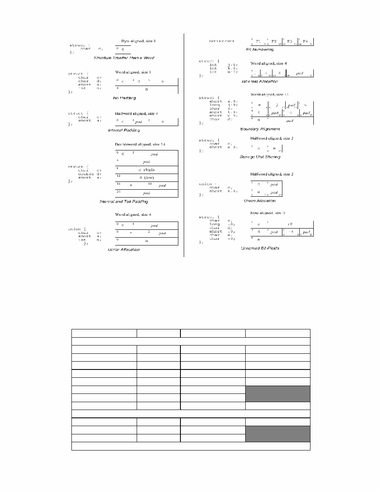

Vex-manual.fm
The VEX System
The VEX System
This manual describes the VEX ("VLIW Example") system. VEX includes three basic components:
1.
The VEX Instruction Set Architecture. VEX defines a 32-bit clustered VLIW ISA that is scalable and customizable
to individual application domains. The VEX ISA is loosely modeled upon the ISA of the HP/STMicroelectronics Lx/
ST200 family of VLIW embedded cores. Scalability includes the ability to change the number of clusters, execution
units, registers and latencies; customizability enables users to define special-purpose instructions in a structured way.
2.
The VEX C Compiler. The VEX C compiler is a derivation of the Lx/ST200 C compiler, itself a descendant of the
Multiflow C compiler. It is a robust, ISO/C89 compiler that uses Trace Scheduling as its global scheduling engine. A
very flexible table-like machine model determines the target architecture. For VEX, we selectively expose some of the
parameters to allow architecture exploration by changing the number of clusters, execution units, issue width and oper-
ation latencies, without having to recompile the compiler.
3.
The VEX Simulation System. The VEX simulator is an architecture-level (functional) simulator that uses compiled
simulator technology to achieve a speed of many equivalent `MIPS'. The simulation system also comes with a fairly
complete set of POSIX-like libc and libm libraries (based on the GNU newlib libraries), a simple built-in cache simula-
tor (level-1 cache only), and an API that enables other plug-ins used for modeling the memory system.
Table of Contents

1 The VEX Instruction Set Architecture
VEX defines an ISA in terms of the Visible Architecture, that is the syntax, semantics and constraints of operations. Since
VEX is a flexible architecture, we can distinguish two types of constraints: the set of rules that all the implementations have to
obey (such as the base ISA, register connectivity, memory coherency, architecture state, etc.); and the set of rules of a specific
VEX instance (such as the issue width, the number of clusters, the mix of functional units, latencies and custom instructions).
VEX models a scalable technology platform for embedded VLIW processors that allows variation in issue width, the num-
ber and capabilities of structures such as functional units and register files, and the processor instruction set. In the spirit of
statically scheduled VLIW architectures, the compiler is responsible for schedule correctness. In addition to basic data and
operation semantics, VEX includes features to give the compiler greater flexibility in scheduling multiple concurrent opera-
tions. These include a complete exposure of all architecture latencies and resource constraints:
·
Parallel execution units, including multiple integer ALUs and multipliers
·
Parallel memory pipelines, including access to multiple data ports
·
Architectural support for data prefetch and other locality hints
·
A large architecturally visible register set
·
Partial predication through select operations
·
An efficient branch architecture with multiple condition registers
·
Encoding of long immediate (32b) operands within the same instruction
This section specifies the structure and behavior of the VEX Architecture, and it excludes most implementation and
microarchitecture details except those embodied in VEX.
VEX defines a parametric space of architectures that share a common set of application and system resources, such as regis-
ters and operations. A VEX instance (that is, an individual processor) implements a variation of the base architecture, that we
obtain by specializing the set of customizable parameters, such as the issue width, the number and mix of functional units, etc.
The most basic unit of execution in VEX is an operation, similar to a typical RISC-style instruction. An encoded operation is
called a syllable, and a collection of syllables issued in a single cycle and executed in VLIW mode as an atomic unit is called
an instruction.
VEX Assembler Notation
To understand the assembler notation for a VEX operation, consider the following example:
c0 cmpne $b0.3 = $r0.4, $r0.5
;;
The cluster identifier c0 denotes the cluster upon which the operation is to be executed--0 in this case. The destination oper-
and(s) are given by a list to the left of the "=", while the source operands are listed to the right of the "=". In this case, the only
destination operand is branch register #3 of cluster 0, and the source operands are general-purpose registers #4 and #5 of clus-
ter 0. In general, the cluster identifier is optional where registers are used as operands, since they uniquely identify the cluster
upon which the operation is to be executed. The instruction separator ";;" indicates the end of a group of operations that are
issued in the same cycle. Figure 1 shows a more detailed breakdown of the notation for a VEX instruction.
c0
add
$r0.1 = $r0.1, 10
;;
Instruction
Separator
Cluster
Specifier
Destination
Separator
Register operand:
[$<bank><cluster>.<num>]
Immediate operand
Opcode
Figure 1 Anatomy of the assembler notation for a VEX instruction
Instructions that include multiple operations simply list each operation on a separate line, with a double semicolon as a sep-
arator of instructions. For example, the following assembler listing shows two instructions, the first one with two operations,
and the second one with three.
c0 add $r0.13 = $r0.3, $r0.0
# instr 0, op 0
c0 sub $r0.16 = $r0.6, 3
# instr 0, op 1
;; ## end of first instruction
c0 shl $r0.13 = $r0.13, 3
# instr 1, op 0
c0 shr $r0.15 = $r0.15, 9
# instr 1, op 1
c0 ldw.d $r0.14 = 0[$r0.4]
# instr 1, op 2
;; ## end of second instruction
1.1 Clusters
VEX is a clustered architecture (Figure 2): it provides scalability of issue width and functionality using modular execution
clusters. A cluster is a collection of register files and a tightly coupled set of functional units. Functional units within a cluster
directly access only the cluster register files, with only a few exceptions. VEX clusters are architecturally visible and the code
contains explicit cluster assignments (to choose the execution cluster for an operation), and explicit inter-cluster copy opera-
tions (to move data across clusters). Inter-cluster copy operations may require more than one cycle (pipelined or not) and may
consume resources in both the source and the destination cluster. Since we can associate data cache ports and/or private mem-
ories with each cluster, VEX allows multiple memory accesses to execute simultaneously. Clusters obey the following set of
rules:
·
A single cluster can issue multiple operations in the same instruction
·
Clusters can have different widths and different operation mixes
·
Not all clusters have to support the entire VEX ISA
·
Units within a single cluster are indistinguishable. In other words, a cluster can only execute a finite set of simultaneous
operations, but these operations do not have to be assigned to particular units within the cluster. The hardware assigns oper-
ations to units within a cluster
By convention, VEX clusters are numbered from zero. Control operations execute on Cluster 0, which is--in this sense--a
"special" cluster which must always be present in any VEX implementation.
At the architecture level, functional units are only connected to register files and not to other functional units. Microarchitec-
ture bypassing (forwarding) is not exposed at the architecture level, but translates into shorter producer-consumer latencies.
Functional units and register files within a single cluster are fully interconnected. In other words, it is always possible to write
Ins truc tion
Fetch
Expansio n
Unit
IC ac he
C luste r 0
D $
C luste r 1
D $
C luste r N
D $
Memory
C ontro ller
Inter
C luste r
Paths
B undle P C
..
.
Figure 2 Structure of a VEX multi-cluster implementation. At the multi-cluster level,
VEX defines the infrastructure to fetch and decode instructions, to sequence programs, to
access memory and to move data across clusters.
the result of a functional unit to a register in the same cluster without passing through intermediate storage. Functional units
and register files in different clusters may have limited connectivity: VEX only guarantees the minimal functionality to move
data between general-purpose register files in different clusters. Note that some functional units (such as the branch unit) may
read registers from other clusters.
1.2 Execution Model
A VEX architecture issues multiple operations in an instruction in a single cycle, and these operations are executed as a single
atomic action (this is sometimes called VLIW mode). Instructions are executed strictly in program order, but within an instruc-
tion, all operands are read before any results are written. For example, it is possible to swap the value of a pair of registers
in a single instruction. Instructions cannot contain sequential constraints among their operations.
The execution model treats instructions as atomic units. An exception caused by an instruction may not affect the execution
of any instruction that was issued earlier and must prevent the instruction generating the exception from modifying the pro-
grammer visible state. The execution behavior is that of an in-order machine: each instruction executes to completion before
the start of the next one. In other words, all syllables of an instruction start together and commit their results together. Commit-
ting results includes modifying register state, updating memory, and generating exceptions.
Operations may have architecturally visible non-unit latency (Non-Uniform Assigned Latencies--NUAL--model). Not all
operations are required to have the same latency, and the compiler has to schedule the code while obeying latency constraints.
Operations may have a different latency, depending on the functional unit or the source/destination register pair. If the hard-
ware can complete an operation in the same number of cycles (or fewer) than assumed by the compiler, no stalls or interlocks
are required. If an operation requires longer than the assumed latency, the hardware stalls execution until the architectural
assumptions hold again (cache misses and branches fall into this category). In this sense VEX is a less-than-or-equal--LEQ--
machine. When the hardware does not provide support to check for latency violations, the behavior of a code sequence that
violates latency constraints is undefined.
Each VEX instance imposes limits on the number and type of operations that fit in a single instruction. When it is not possi-
ble to fill every available operation "slot", the VEX encoding scheme ensures that no space is wasted. VEX encodes opera-
tions in 32-bit syllables, that include two reserved bits for sequencing and cluster encoding:
·
The instruction-stop bit (set in the last syllable of an instruction) indicates the end of an instruction and is used by the
sequencing logic to identify the execution boundaries within a cycle
·
The cluster-start bit (set in the first syllable of a cluster within an instruction) indicates the beginning of the section of the
instruction corresponding to a new cluster. Syllables of an instruction are required to be sorted in cluster order from low
to high addresses. The cluster-start bit is used by the dispersal logic to route the proper section of the instruction to the cor-
responding cluster
1.3 Architecture State
The architecturally visible state is composed of the collection of the state of all the architecturally visible containers. VEX
containers include general-purpose registers, branch registers, control registers and in general any non-volatile and addressable
storage element. VEX containers obey the following constraints.
·
All architecturally visible containers must be individually addressable. In other words, no architecturally visible element
can be implicitly part of a larger container without an operation that allows it to be individually addressed
·
Architecturally visible containers are never overwritten by operations that do not explicitly specify the container among
their destinations. Containers may not be implicitly overwritten (this would be an example of a "hot spot").
·
The architecture implementation must provide a "copy" mechanism to move data to and from any architecturally visible
container
All VEX operations operate on 32-bit containers, and do not include specific support for non-32-bit values. For example, the
memory architecture widens smaller accesses (8- and 16-bit) to 32-bit containers. Larger data types (e.g., 64-bit) are accessed
with multiple 32-bit memory operations. Operations on smaller data types require the compiler to execute the proper sign/zero
extensions. Note that, although they may appear as an exception of the previous rule, single-bit branch registers are actually a
concise representation of the integer values `1' and `0'. Operations that manipulate branch registers must perform the proper
conversions when moving values between general-purpose registers and branch registers.
1.4 Arithmetic and Logic Operations
VEX supports a "traditional" set of RISC-style integer operations. Less traditional operations include shift-and-add (for effi-
cient address computations), select (for partial predication), logical and/or operations (for control-flow simplification), min/
max operations and a rich set of integer multiplication operations. This version of VEX focuses on integer operations, and
does not include any specific hardware support for floating-point, which is emulated through a library of intrinsics derived
from the public-domain SoftFloat
1
package.
show the rich set of multiplication operations that VEX supports, as often required in DSP-like algorithms. In the tables, we
use the notations s1, s2 to indicate a source general-purpose register, t for a target general-purpose register, b for a branch reg-
ister (source or destination), and im to indicate a source immediate (constant). VEX operations are semantics-based and for-
mat-independent, and the same opcode is used regardless of the type of operands and results. For example, VEX uses add for
additions between registers, or between register and immediates.
1. SoftFloat was written by John R. Hauser at the International Computer Science Institute (ICSI), in collaboration with the University of California at Berke-
ley. See http://www.cs.berkeley.edu/~jhauser/arithmetic/softfloat.html for more information.
Table 1: Integer Arithmetic Operations in VEX
Operation
Description
ADD t=s1,{s2|im}
Add
ADDCG t,b=b,s1,s2
Add with Carry and Generate Carry
AND t=s1,{s2|im}
Bitwise AND
ANDC t=s1,{s2|im}
Bitwise Complement and AND
DIVS t,b=b,s1,s2
Division step with Carry and Generate Carry
MAX t=s1,{s2|im}
Maximum signed
MAXU t=s1,{s2|im}
Maximum unsigned
MIN t=s1,{s2|im}
Minimum signed
MINU t=s1,{s2|im}
Minimum unsigned
OR t=s1,{s2|im}
Bitwise OR
ORC t=s1,{s2|im}
Bitwise complement and OR
SH1ADD t=s1,{s2|im}
Shift left 1 and add
SH2ADD t=s1,{s2|im}
Shift left 2 and add
SH3ADD t=s1,{s2|im}
Shift left 3 and add
SH4ADD t=s1,{s2|im}
Shift left 4 and add
SHL t=s1,{s2|im}
Shift left
SHR t=s1,{s2|im}
Shift right signed
SHRU t=s1,{s2|im}
Shift right unsigned
SUB t={s2|im},s1
Subtract
SXTB t=s1
Sign extend byte
SXTH t=s1
Sign extend half
ZXTB t=s1
Zero extend byte
ZXTH t=s1
Zero extend half
XOR t=s1,{s2|im}
Bitwise Exclusive OR
Table 2: Multiplication Operations in VEX
Operation
Description
MPYLL t=s1,{s2|im}
Multiply Signed Low 16 x Low 16 bits
MPYLLU t=s1,{s2|im}
Multiply Unsigned Low 16 x Low 16 bits
MPYLH t=s1,{s2|im}
Multiply Signed Low 16 x High 16 bits
MPYLHU t=s1,{s2|im}
Multiply Unsigned Low 16 x High 16 bits
MPYHH t=s1,{s2|im}
Multiply Signed High 16 x High 16 bits
MPYHHU t=s1,{s2|im}
Multiply Unsigned High 16 x High 16 bits
MPYL t=s1,{s2|im}
Multiply Signed Low 16 x 32 bits
MPYLU t=s1,{s2|im}
Multiply Unsigned Low 16 x 32 bits
MPYH t=s1,{s2|im}
Multiply Signed High 16 x 32 bits
Examples
The following example shows how to use select operations in a simple if-conversion (note that the VEX compiler would rec-
ognize this as min and max).
## Implements:
##
if (x > 10) t = 10;
##
if (x < 0) t = 0;
## where x is in $r0.1 and t is in $r0.2
##
c0 cmpgt $b0.0 = $r0.1, 10
c0 cmplt $b0.1 = $r0.1, 0
;;
c0 slctf $r0.2 = $b0.0, $r0.2, 10
;;
c0 slctf $r0.2 = $b0.1, $r0.2, 0
;;
The following example shows how to efficiently use the extensive multiplication repertoire in VEX (assumes a 2-cycle multi-
plication)
## Implements:
##
int t = ((short)a)*((short)b) + (a>>16)*(b>>16)
## where a is in $r0.1, b in $r0.2 and t in $r0.3
##
c0 mpyll $r0.4 = $r0.1, $r0.2
c0 mpyhh $r0.5 = $r0.1, $r0.2
xnop 1
;;
c0 add $r0.3 = $r0.4, $r0.5
;;
The following example shows how to efficiently use the logical operation repertoire in VEX to implement complex condi-
tional expressions (assumes a 2-cycle compare-to-branch delay and a 2-cycle memory load). Note the use of speculation
(
ldw.d
) to enable the manipulation of memory operations in conditionals.
## Implements:
##
if ((a > 0 || d < 0) && *pb > c)
## goto
LABEL;
## a in $r0.3, pb in $r0.4, c in $r0.5, d in $r0.6
##
c0 cmpgt $r0.13 = $r0.3, $r0.0
c0 cmplt $r0.16 = $r0.6, $r0.0
c0 ldw.d $r0.14 = 0[$r0.4]
;;
MPYHU t=s1,{s2|im}
Multiply Unsigned High 16 x 32 bits
MPYHS t=s1,{s2|im}
Multiply Signed High 16 x 32, shift left 16
Table 3: Logical and Select Operations in VEX
Operation
Description
CMPEQ {t|b}=s1,{s2|im}
Compare (equal)
CMPGE {t|b}=s1,{s2|im}
Compare (greater equal - signed)
CMPGEU {t|b}=s1,{s2|im} Compare (greater equal - unsigned)
CMPGT {t|b}=s1,{s2|im}
Compare (greater - signed)
CMPGTU {t|b}=s1,{s2|im}
Compare (greater - unsigned)
CMPLE {t|b}=s1,{s2|im}
Compare (less than equal - signed)
CMPLEU {t|b}=s1,{s2|im}
Compare (less than equal - unsigned)
CMPLT {t|b}=s1,{s2|im}
Compare (less than - signed)
CMPLTU {t|b}=s1,{s2|im}
Compare (less than - unsigned)
CMPNE {t|b}=s1,{s2|im}
Compare (not equal)
NANDL {t|b}=s1,s2
Logical NAND
NORL {t|b}=s1,s2
Logical NOR
ORL {t|b}=s1,s2
Logical OR
SLCT t=b,s1,{s2|im}
Select s1 on True Condition
SLCTF t=b,s1,{s2|im}
Select s1 on False Condition
Table 2: Multiplication Operations in VEX
c0 orl $r0.13 = $r0.13, $r0.16
;;
c0 cmpgt $r0.14 = $r0.14, $r0.5
;;
c0 andl $b0.0 = $r0.13, $r0.14
xnop 1
;;
c0 br $b0.0, LABEL
;;
1.5 Intercluster Communication
VEX uses a pair of send and receive operations to implement inter-cluster communication. Send/Receive operations specify a
source/destination register and an intercluster path identifier. A send operation places the source register value on the specified
inter-cluster path. The corresponding receive operation, which must be issued in the same instruction, retrieves the data from
the specified inter-cluster path and stores it in the destination register. The immediate operand enables a large number of
microarchitectural paths.
Table 4 shows the basic intercluster operations that VEX supports. For convenience and readability, VEX assembler usually
represents pairs of send/receive operations with the macro mov as the example shows.
Example
## Copy reg.3 of cluster 0 to reg.4 of cluster 1
## Copy reg.1 of cluster 2 to reg.7 of cluster 3
## (in the same instruction)
##
c1=c0
mov $r1.4 = $r0.3
c3=c2 mov $r3.7 = $r2.1
;;
1.6 Memory Operations
VEX is a load/store architecture, meaning that only load and store operations can access memory, and that memory operations
only target general-purpose registers (e.g., there are no memory-to-memory operations). This version uses a big-endian byte
ordering model. Memory accesses in VEX are restricted to native alignment (i.e., 0 mod 2 for short, 0 mod 4 for int, 0 mod 8
for double). Misaligned accesses cause a non-recoverable trap.
VEX only supports a base plus offset addressing mode, where the base may be any general-purpose register, but the offset
must be an immediate. For example, the following examples represent a subset of the supported load operations:
## int a[]; t = a[10] (a in $r0.2, t in $r0.1)
c0 ldw $r0.1 = 40[$r0.2]
;;
## short a[]; t = a[10] (a in $r0.2, t in $r0.1)
c0 ldh $r0.1 = 20[$r0.2]
;;
## char a[]; t = a[10] (a in $r0.2, t in $r0.1)
c0 ldb $r0.1 = 10[$r0.2]
;;
VEX supports speculative execution of memory load operations. Control speculation occurs when the compiler moves a
load operation before a controlling branch in the original program order. VEX supports this form of speculation through dis-
missible load operations. A dismissible load (sometimes called silent load) ignores non-recoverable exceptions, so it guaran-
tees that correct programs run correctly. On the other hand, programs that rely on the generation of non-recoverable
exceptions may not be compatible with the VEX speculation model. VEX also supports the concept of explicit memory
prefetching, through a prefetch operation.
When multiple memory accesses are allowed, VEX guarantees coherency between the memory structures, including caches
and local memories. A VEX implementation may introduce stall cycles in order to provide this guarantee. Users are responsi-
Table 4: Intercluster Operations in VEX
Operation
Description
SEND s1, im
Send <s1> to the path identified by <im>
RECV t = im
Assigns the value from the path identified by <im> to <t>
ble for guaranteeing coherency beyond the uniprocessor model.
Table 5 shows the repertoire of VEX memory operations, including possible modifiers (represented as {.modifier}). VEX
supports two flavors of memory modifiers: dismissible (".d") to indicate speculative operations; and optional locality hints
(".s" for "streaming" accesses, and ".l" for "local" accesses).
The semantics of dismissible load operations are somewhat subtle. A dismissible load must return exactly the same value as
a corresponding conventional load if such a load could be executed. When a conventional load would suffer a non-recoverable
exception, the dismissible load must return a 0. Thus, the correct behavior of dismissible loads is tightly coupled with the pro-
cessor exception model.
Access hints are performance enhancement hints and a VEX implementation may choose to ignore them. The VEX memory
system may use different caching methods and/or memory structures depending on the access hint. For example, cache lines
loaded by addresses tagged with spatial-only locality may be flagged to be replaced sooner than others.
Prefetch operations are also defined as hints to the underlying memory system. The intended behavior is to cause the
requested data to be loaded into the local data cache (or prefetch buffer) if not already present. A legal, but not very interesting,
implementation of prefetch is a NOP; semantically, a prefetch operation is indeed equivalent to a NOP--it is not allowed to
modify the programmer visible state or to cause an exception. Properly implemented prefetch operations may be used to
reduce cache miss rates by loading data into the cache in advance of a load or store operations, without stalling execution.
The following code shows an example of dismissble load:
## Implements:
##
if (p != 0) *p += 2
## With p in $r0.1, 2-cycle load, 2-cycle compare
##
c0
cmpne $b0.0 = $r0.1, 0
c0
ldw.d
$r0.2 = 0[$r0.1]
xnop 2
;;
c0 add $r0.2 = $r0.2, 2
c0 br $b0.0, L1
;;
c0 stw 0[$r0.1] = $r0.2
;;
L1:
1.7 Control Operations
VEX supports a simple statically-predicted branch architecture; branches are not considered the most critical operations for the
typical media-processing embedded applications. The VEX compiler uses profiling and static branch prediction extensively to
linearize the predicted paths--which coincide with the fall-through paths. To remove microarchitecture dependencies from the
ISA level, VEX does not expose branch delay slots; the assumption is that the microarchitecture quashes the necessary instruc-
tions in the pipeline following a taken branch. In this way, it is possible to apply dynamic branch prediction schemes when
they prove to be effective. VEX branches execute in two phases.
1.
Prepare the condition specifying the branch, in advance of the control flow change point, and store it in a set of single-
bit branch registers
2.
Execute the branch based on the condition as the very last action of an instruction.
The presence of multiple branch registers allows the compiler to start preparing multiple conditions before executing the
first branch. All compare and logical operations can target either a branch or a general register for flexibility. The delay
between the generation of a condition and its use in a branch is exposed to the compiler. Only cluster 0 supports the execution
Table 5: Memory Operations in VEX
Operation
Description
LDW{.d}{.s}{.l} t = im[s]
Load word
LDH{.d}{.s}{.l} t = im[s1]
Load halfword signed
LDHU{.d}{.s}{.l} t = im[s1]
Load halfword unsigned
LDB{.d}{.s}{.l} t = im[s1]
Load byte signed
LDBU{.d}{.s}{.l} t = im[s1]
Load byte unsigned
STW{.s}{.l} im[s1]
=
s2
Store word
STH{.s}{.l} im[s1]
=
s2
Store halfword
STB{.s}{.l}
im[s1] = s2
Store byte
PFT{.s}{.l} im[s1]
Prefetch
of branch operations; however, all clusters can execute compare/logical operations and write the condition result to their own
branch registers. In a multicluster organization, branches execute on cluster 0, but can read conditions from other clusters.
VEX specifies branch target addresses in two alternative ways: through a relative displacement from the program counter; or
through the content of a special register (the link register) for indirect jumps. A simplifying assumption in VEX is that branch
displacements (typically 24 bits) are wide enough to reach the entire text section. VEX support for call operations is limited to
a simple branch-and-link operation, that saves the return pointer to the special link register. The software is responsible for all
other calling conventions (save and restore registers, manage the stack), as we describe in Section 2 "The VEX Run-Time
Architecture". Table 6 lists the VEX control operations; in addition to the standard notations, we also use off to indicate a PC-
relative code offset, and lr for the VEX link register ($l0.0).
Finally, a special operation is the multi-cycle no-operation control (xnop). In VEX, xnop operations take an argument and
define the number of cycles that the machine must stall before issuing the next instruction. This can be implemented in various
ways: with a separate operation (very inefficient), with a few bits in each instruction (good to cover small latencies), or it could
even be completely ignored for a microarchitecture with a scoreboarded register file. The compiler can optionally be instructed
to emit explicit nop operations (empty instructions) with the -fno-xnop flag.
Examples
The following example shows how to use a combination of compare and logical operations to simplify the control flow and to
start the preparation of multiple branches with multiple condition registers.
## Implements:
##
if (a || b) { [Block 1] };
##
if (a > 0 && b < 0) { [Block 2] } ;
## where a is in $r0.1 and b is in $r0.2
##
c0 orl $b0.0 = $r0.1, $r0.2
c0 cmpgt $r0.3 = $r0.1, 0
c0 cmplt $r0.4 = $r0.2, 0
;;
c0 andl $b1.0, $r0.3, $r0.4
;;
c0 br $b0.0, L1 ## L1 starts [Block 1]
;;
c0 br $b1.0, L2 ## L2 starts [Block 2]
;;
## Continue with the fallthrough path
In the multicluster case, two identical branch syllables are encoded in the instruction: the first (in cluster 0) provides the branch
target, the second (in the condition cluster) provides the branch condition. For example, the following code sequence branches
on a condition on cluster 2.
##
## Generate condition on cluster 2
##
c2
cmplt $b2.0 = $r2,1, $r2.0
xnop 1
;;
##
## Branch on cl.0 (also uses a syllable on cl.2)
##
c0 br $b2.0, L2
Table 6: Control Operations in VEX
Operation
Description
GOTO off
Unconditional relative jump
IGOTO lr
Unconditional absolute indirect jump to link register
CALL lr = im
Unconditional relative call
ICALL lr = lr
Unconditional absolute indirect call to link register
BR b, off
Conditional relative branch on true condition
BRF b, off
Conditional relative branch on false condition
RETURN t = t, off, lr Pop stack frame (t = t + off) and goto link register
RFI
Return from interrupt
XNOP n
Multicycle No-Operation(advance the pipeline for n cycles)
;;
1.8 Structure of the default VEX Cluster
The default VEX cluster (supported by the default tool configuration) has two register files, four integer ALUs, two 16x32-bit
multiply units, and a data cache port (Figure 3). The cluster can issue up to four operations per instruction. The register set
consists of 64 general-purpose 32-bit registers (GRs) and 8 1-bit branch registers (BRs). In addition to the base computational
resources, the default VEX cluster also contains a control unit (Branch Unit) for program sequencing.
Note that, without changing the base instruction set, the cluster organization could be significantly altered, with no impact
on the software. For example, we could produce a cluster with two integer ALUs and one multiply unit. Similarly, the func-
tionality of the cluster could be expanded with additional special purpose operations.The default VEX clusters contains Mem-
ory, Integer, and Branch functional units.
·
Memory Units perform load, store, and prefetch operations. There are as many units as data cache memory ports con-
nected to the cluster. Each Memory unit is associated with an access to the memory system.
·
Integer Units execute the common set of integer, compare, shift and select operations, on registers or immediate operands
·
Branch Units execute control operations based on the conditions stored in the branch registers, such as conditional
branches, unconditional jumps, direct and indirect calls and returns.
Given the restriction that only four syllables may be used to encode the operations for the cluster, at most four operations
may be issued in a single instruction.
Register Files and Immediates
VEX operand can be general purpose (GR) registers, branch (BR) registers, link registers (LR) or immediates (constants).
·
General-purpose Registers are a set of 64 32-bit general-purpose registers, including one special registers: register #0
wired to the constant `0', The software conventions of the VEX RTA (see Section 2 "The VEX Run-Time Architecture")
define other usage rules for other VEX registers.
·
Branch Registers are a set of 8 1-bit registers written by compare/logical operations and read by conditional branches. In
addition, branch registers are used as conditions for select operations and also store the carry bit for the operations that
manipulate carries.
Reg
File
64 GR
(32 bits)
$r0=0
$r63=lr
Load
Store
Unit
ALU
ALU
ALU
ALU
Branch
Unit
I$
32KB
direct
D
e
c
ode
r
Br RegFile
8 BR
(1 bit)
D$
4-way
32KB
16x32
Mult
16x32
Mult
Figure 3 Structure of the default VEX cluster. What the VEX default configuration implements is a
4-issue cluster that loosely resembles the HP/ST ST220 VLIW processor core. The cluster includes 4
integer units, 2 multipliers, a load-store unit and a control unit. VEX allows to extend the cluster by
changing issue width, number of clusters as well as other architecture parameters.
·
Link Register for procedure calls, returns and indirect jumps.
·
Immediate Operands encode compile-time and load-time constants. VEX instructions encode the necessary immediates
without requiring extra operations. VEX supports three types of immediates: branch offsets (24-bit, for branch operations)
fit in a single syllable: short immediates (9 bits, for all operations) fit in a single syllable; long immediates (32 bit, for all
operations) draw bits upon one adjacent extension syllable in the same cluster and instruction. Immediate extensions are
decoded in the same instruction of the operation that reads them, and carry no performance penalty.
1.9 VEX Semantics
This section describes the semantics of the VEX operations using the syntax of C preprocessor macros. This set of macros is
very similar to what--for example--the VEX compiled simulator emits to implement VEX operations. The description only
covers the architectural state changes of each operation without considering the exception behavior. The description of the
computational operations is self-explanatory. The description of memory operations uses the set of
"sim_mem_access_safe*()
"
utilities to mimic the behavior of speculative memory accesses that silently dismiss non-
recoverable exceptions. The description of control operations uses the
"goto_instr(x)"
utility to indicate changes in con-
trol flow, and the
"next_instr()"
utility to indicate the address of the instruction following the current. Note that the link
register used for system calls and indirect jumps is always explicitly nominated, since the VEX ISA prohibits "invisible" side-
effects of operations on architecturally visible state.
/* Memory Macros and Operations */
#define UINT8(s) ((s) & 0xff)
#define INT8(s) (((signed) ((s) << 24)) >> 24)
#define UINT16(s) ((s) & 0xffff)
#define INT16(s) (((signed) ((s) << 16)) >> 16)
#define UINT32(s) ((unsigned) (s))
#define INT32(s) ((signed) (s))
#define MEM8(a) (*((volatile unsigned char*)(a)))
#define MEM16(a) (*((volatile unsigned short*)(a)))
#define MEM32(a) (*((volatile unsigned*)(a)))
#define MEMSPEC8(a) sim_mem_access_safe8(a)
#define MEMSPEC16(a) sim_mem_access_safe16(a)
#define MEMSPEC32(a) sim_mem_access_safe32(a)
#define LDBs(t,s1) t = INT8(MEMSPEC8(s1)) /* speculative */
#define LDB(t,s1) t = INT8(MEM8(s1))
#define LDBUs(t,s1) t = UINT8(MEMSPEC8(s1)) /* speculative */
#define LDBU(t,s1) t = UINT8(MEM8(s1))
#define LDHs(t,s1) t = INT16(MEMSPEC16(s1)) /* speculative */
#define LDH(t,s1) t = INT16(MEM16(s1))
#define LDHUs(t,s1) t = UINT16(MEMSPEC16(s1)) /* speculative */
#define LDHU(t,s1) t = UINT16(MEM16(s1))
#define LDWs(t,s1) t = INT32(MEMSPEC32(s1)) /* speculative */
#define LDW(t,s1) t = INT32(MEM32(s1))
#define STB(t,s1) MEM8(t) = UINT8(s1)
#define STH(t,s1) MEM16(t) = UINT16(s1)
#define STW(t,s1) MEM32(t) = UINT32(s1)
/* Computational and Logical Operations */
#define ADD(t,s1,s2) t = (s1) + (s2)
#define AND(t,s1,s2) t = (s1) & (s2)
#define ANDC(t,s1,s2) t = ~(s1) & (s2)
#define ANDL(t,s1,s2) t = ((((s1) == 0) | ((s2) == 0)) ? 0 : 1)
#define CMPEQ(t,s1,s2) t = ((s1) == (s2))
#define CMPNE(t,s1,s2) t = ((s1) != (s2))
#define CMPGT(t,s1,s2) t = (INT32(s1) > INT32(s2))
#define CMPGE(t,s1,s2) t = (INT32(s1) >= INT32(s2))
#define CMPLT(t,s1,s2) t = (INT32(s1) < INT32(s2))
#define CMPLE(t,s1,s2) t = (INT32(s1) <= INT32(s2))
#define CMPGTU(t,s1,s2) t = (UINT32(s1) > UINT32(s2))
#define CMPGEU(t,s1,s2) t = (UINT32(s1) >= UINT32(s2))
#define CMPLTU(t,s1,s2) t = (UINT32(s1) < UINT32(s2))
#define CMPLEU(t,s1,s2) t = (UINT32(s1) <= UINT32(s2))
#define MOV(t,s1) t = s1
#define MPYL(t,s1,s2) t = (s1) * INT16(s2)
#define MPYH(t,s1,s2) t = (s1) * INT16((s2) >> 16)
#define MPYHS(t,s1,s2) t = ((s1) * INT16((s2) >> 16)) << 16
#define MPYLU(t,s1,s2) t = (s1) * UINT16(s2)
#define MPYHU(t,s1,s2) t = (s1) * UINT16((s2) >> 16)
#define MPYLL(t,s1,s2) t = INT16(s1) * INT16(s2)
#define MPYLH(t,s1,s2) t = INT16(s1) * INT16((s2) >> 16)
#define MPYHH(t,s1,s2) t = INT16((s1) >> 16) * INT16((s2) >> 16)
#define MPYLLU(t,s1,s2) t = UINT16(s1) * UINT16(s2)
#define MPYLHU(t,s1,s2) t = UINT16(s1) * UINT16((s2) >> 16)
#define MPYHHU(t,s1,s2) t = UINT16((s1) >> 16) * UINT16((s2) >> 16)
#define NANDL(t,s1,s2) t = (((s1) == 0) | ((s2) == 0)) ? 1 : 0
#define NOP() /* do nothing */
#define NORL(t,s1,s2) t = (((s1) == 0) & ((s2) == 0)) ? 1 : 0
#define ORL(t,s1,s2) t = (((s1) == 0) & ((s2) == 0)) ? 0 : 1
#define OR(t,s1,s2) t = (s1) | (s2)
#define ORC(t,s1,s2) t = (~(s1)) | (s2)
#define SH1ADD(t,s1,s2) t = ((s1) << 1) + (s2)
#define SH2ADD(t,s1,s2) t = ((s1) << 2) + (s2)
#define SH3ADD(t,s1,s2) t = ((s1) << 3) + (s2)
#define SH4ADD(t,s1,s2) t = ((s1) << 4) + (s2)
#define SHL(t,s1,s2) t = (INT32(s1)) << (s2)
#define SHR(t,s1,s2) t = (INT32(s1)) >> (s2)
#define SHRU(t,s1,s2) t = (UINT32(s1)) >> (s2)
#define SLCT(t,s1,s2,s3) t = UINT32(((s1) == 1) ? (s2) : (s3))
#define SLCTF(t,s1,s2,s3) t = UINT32(((s1) == 0) ? (s2) : (s3))
#define SUB(t,s1,s2) t = (s1) - (s2)
#define SXTB(t,s1) t = UINT32((INT32((s1) << 24)) >> 24)
#define SXTH(t,s1) t = UINT32((INT32((s1) << 16)) >> 16)
#define XOR(t,s1,s2) t = (s1) ^ (s2)
#define XNOP(n) /* do nothing */
#define ZXTB(t,s1) t = ((s1) & 0xff)
#define ZXTH(t,s1) t = ((s1) & 0xffff)
/* Carry Manipulation */
#define ADDCG(t,cout,s1,s2,cin) { \
t = (s1) + (s2) + ((cin) & 0x1); \
cout = ((cin) & 0x1) \
? (UINT32(t) <= UINT32(s1)) \
: (UINT32(t) < UINT32(s1)); \
}
#define DIVS(t,cout,s1,s2,cin) { \
unsigned tmp = ((s1) << 1) | (cin); \
cout = UINT32(s1) >> 31; \
t = cout ? tmp + (s2) : tmp - (s2); \
}
/* Basic Control Operations */
#define goto_instr(X) /* jumps to the instruction at address "x" */
#define next_instr() /* address of the instr following address "x" */
#define BR(b1,off) if (b1 == 1) goto_instr(off)
#define BRF(b1,off) if (b1 == 0) goto_instr(off)
#define GOTO(off) goto_instr(off)
#define IGOTO(lr) goto_instr(lr) /* "lr" is the link reg (l0)*/
#define CALL(off,lr) { lr = next_instr(); goto_instr(off); }
#define ICALL(off) { lr = next_instr(); goto_instr(s1); }
#define RETURN(sp,off,lr) { sp += off; goto_instr(lr); }
2 The VEX Run-Time Architecture
This VEX Run-Time Architecture (RTA) defines the common software conventions necessary to compile, link, and execute a
VEX program. In other systems, it is sometimes also called Application Binary Interface (ABI). VEX applications run in a 32-
bit environment and use the "ILP32" data model: where integers, long, and pointers are 32 bits. Within this specification, half-
word
refers to a 16-bit object, word refers to a 32-bit object, and doubleword refers to a 64-bit object
In the following we focus on a RTA model that is well suited for embedded systems, since it is restricted to a single, stati-
cally bound, non-relocatable load module. This model does not support dynamically-linked libraries, allows the use of abso-
lute addresses, and it does not use function descriptors or a global data pointer.
2.1 Data Allocation and Layout
This section describes how to access and layout various types of data objects in the VEX world. All VEX items greater than 8
bytes must all be aligned on a 16-byte boundary. Smaller data items must be aligned on the next larger power-of-two boundary.
In other words, 1-byte objects have no alignment restrictions, 2-byte objects have to be aligned 0 mod 2; objects of size 3 and
4: 0 mod 4; objects of size 5 to 8: 0 mod 8; and so on
·
Global variables. Common blocks, dynamically allocated regions (such as object returned by malloc()), and external data
access are made with an absolute address.
·
Local static data accesses are made with an absolute address
·
Local memory stack variables accesses are relative to the stack-pointer register. Stack frames must always be aligned on
a 32-byte boundary. That is, the stack pointer register must always be aligned on a 32-byte boundary.
·
Constants and literals.may be placed in the text or data segments
Table 7 lists the fundamental scalar data types supported by the VEX architecture (values expressed in bytes).
Aggregate data types (structures, unions and arrays) assume the alignment of their most strictly aligned component. The size
of any object, including aggregates and unions, is always a multiple of the object's alignment. An array uses the same align-
ment as its elements. Structure and union objects can require padding to meet size and alignment constraints. An entire struc-
ture or union object is aligned on the same boundary as its most strictly aligned member; an array object is aligned on the same
boundary as its element type. Each structure member is assigned to the lowest available offset with the appropriate alignment.
This may require internal padding, depending on the previous member. A structure's size is increased, if necessary, to make it
a multiple of the alignment. This may require tail padding, depending on the last member. Figure 4 shows the layout of typical
structures and bitfields.
2.2 Register Usage
VEX registers are partitioned into the following classes:
·
Scratch registers may be destroyed by a procedure call; the caller must save these registers before a call if needed (also
called caller-saves)
·
Preserved registers must not be destroyed by a procedure call; the callee must save and restore these registers if used (also
called callee-saves)
·
Constant registers contain a fixed value that cannot be changed
Table 7: Scalar data types in VEX
Type
C
Size
Align
Hardware
Representation
Integral
char
signed char
1
1
signed byte
unsigned char
1
1
unsigned byte
short
signed short
2
2
signed halfword
unsigned short
2
2
unsigned halfword
int, signed int
long, signed long
enum
4
4
signed word
unsigned int
unsigned long
4
4
unsigned word
Pointer
any-type *
any-type (*)()
4
4
unsigned word
Floating point
float
4
4
IEEE single precision
double
8
8
IEEE double precision

·
Special registers, used in the call/return mechanism
The following tables (Table 8 and Table 9) show a description of the register usage in VEX. Note that VEX defines a user
mode where all the registers are available, and a kernel mode where only a subset of registers are available. The kernel mode is
useful to reduce the overhead of context switches that do not require the whole set of registers offered by the processor.
Table 8: Register Usage in VEX
Register
Class
Usage (user-mode)
Usage (kernel-mode)
General Registers (cluster 0)
$r0.0
Constant
always zero
always zero
$r0.1
Special
stack pointer
stack pointer
$r0.2
Scratch
struct return pointer
struct return pointer
$r0.3-$r0.10
Scratch
argument/return value
argument/return value
$r0.11-$r0.15
Scratch
temporaries
temporaries
$r0.16-$r0.56
Scratch
temporaries
(unavailable)
$r0.57-$r0.63
Preserved
temporaries(callee-save)
$l0.0
Special
link register
link register
General Registers (other clusters)
$ri.0
Constant
always zero
always zero
$ri.1$ri.56
Scratch
temporaries
(unavailable)
$ri.57$ri.63
Preserved
temporaries(callee-save)
Branch Registers (cluster 0)
Figure 4 Layout of typical structures and unions (left) and bitfields (right) in VEX. The picture
refers to a big-endian byte ordering model. Bit numbering is left-to-right for LSB-to-MSB bits.
2.3 Stack Layout and Procedure Linkage
The memory stack in VEX is used for spilled registers and parameter passing. It is organized as a stack of procedure frames,
beginning with the main program's frame at the base of the stack, and continuing towards the top of the stack with nested pro-
cedure calls. The frame for the currently active procedure is at the top of the stack. The memory stack begins at an address
determined by the operating system, and grows towards lower memory addresses. The stack pointer register always points to
the lowest address in the current frame on the stack.
Each procedure creates its frame on entry by subtracting its frame size from the stack pointer, and removes its frame from
the stack on exit by restoring the previous value of the stack pointer, usually by adding its frame size. Not every procedure
needs a memory stack frame; however, every non-leaf procedure needs to save at least its return link.
A procedure frame (Figure 5) consists of two regions:
1.
Local storage. A procedure may store local variables, temporaries, and spilled registers in this region
2.
Outgoing parameters. Parameters in excess to those passed in registers are stored in this region. A procedure accesses
its incoming parameters in the outgoing parameter region of its caller's stack frame
3.
Scratch area. A 16-byte region provided as scratch storage for procedures called by the current procedure, so that each
procedure may use the 16 bytes at the top of its own frame as scratch memory
The stack pointer must always be aligned at a 32-byte boundary (i.e., stack frames sizes are a multiple of 32 bytes), and pro-
grams may not write below the stack pointer. Most procedures have a fixed size frame. The VEX compiler determines the size
required for each region, pads the local storage area to a multiple of 32 bytes, creates the frame by subtracting a constant from
the previous stack pointer, and removes the frame by adding the same constant to the stack pointer before returning.
Procedure Linkage
VEX defines the following types of calls:
·
Direct calls, made directly to the entry point of the target procedure
$b0.0$b0.3
scratch
temporaries
temporaries
$b0.4-$b0.7
scratch
temporaries
(unavailable)
Branch Registers (other clusters)
$bi.0-$bi.7
scratch
temporaries
(unavailable)
Table 9: Detailed register usage in VEX
Cluster 0
$r0.0
Constant register 0; if written to, it represents a bit-bucket (written values are discarded)
$r0.1
The stack pointer holds the limit of the current stack frame, which is the address of the
stack's bottommost, valid word. At all times, the stack pointer must point to a 0 mod 32
aligned area. The stack pointer is also used to access any memory arguments upon
entry to a function and is preserved across any functions called by the current function
$r0.2
Struct return pointer register. If the function called returns a struct or union value
larger than 32 bytes, the register contains, on entry, the appropriately aligned address of
the caller-allocated area to contain the value being returned. Scratch otherwise.
$r0.3$r0.10
Argument and return values up to 32 bytes are passed in these registers. Arguments
beyond these registers appear in memory (see Section 2.3 "Stack Layout and Procedure
Linkage"). Within the called function, these registers are scratch registers.
$r0.11$r0.56
Scratch registers (caller-saves) with no specific role in the calling sequence
$r0.57$r0.63
Preserved registers (callee-saves) with no specific role in the calling sequence.
$l0.0
Link register to store the return address on entry to a procedure. Branch operations
read it for indirect local jumps, returns, and indirect function calls.
$b0.0$b0.7
Scratch registers (caller-saves) with no specified role in the calling sequence.
Other Clusters
$ri.0
Constant register 0; if written to, it represents a bit-bucket (written values are discarded)
$ri.1$ri.56
Scratch registers (caller-saves) with no specific role in the function calling sequence
$ri.57$ri.63
Preserved registers (callee-saves) with no specific role in the calling sequence
$bi.0$bi.7
Scratch registers (caller-saves) with no specified role in the calling sequence
Table 8: Register Usage in VEX
Register
Class
Usage (user-mode)
Usage (kernel-mode)
·
Indirect calls made through a function pointer that points to the address of the function entry point for the target function.
·
Special calls made through a special calling convention negotiated between the compiler and the run-time system (e.g.,
intrinsics calls).
For all calls, the compiler has to keep the values that live across the call alive in scratch registers, by saving them into pre-
served registers or on the memory stack; it must set up parameters in registers and memory; then issue the call operation,
assuming that the call displacement field is sufficiently wide to reach any target. The call operation saves the return link in the
link register.
At procedure entry, the compiler allocates a frame on the memory stack, if necessary. Then, if it is a non-leaf procedure, it
must save the return link in the memory stack frame, together with any preserved registers that will be used in this procedure.
At procedure exit, the compiler is responsible for restoring the return link and any preserved registers that were saved, as
well as for deallocating the memory stack frame (if created). Finally, the procedure exits by branching through the link register
with the return instruction. After the call, any saved values must be restored.
Parameters are passed in a combination of general registers and memory (Figure 6). The first 32 bytes of the parameter list
are passed in registers, and the rest of the parameters are passed on the memory stack, beginning at the caller's stack pointer
plus 16 bytes. The caller uses up to 8 general registers for parameters. To accommodate variable argument lists, there is a fixed
correspondence between an argument's position in the parameter list and the register used for general register arguments. This
allows a procedure to spill its register arguments easily to memory before stepping through the argument list with a pointer.
Parameters are first allocated on a conceptual argument list, which is then mapped to a combination of registers and the
memory stack. The argument list begins at relative address 0, and is allocated towards increasing addresses. Each parameter
begins on a 4-byte boundary. Each 4-byte unit in the argument list is called an argument slot (named arg0, arg1, arg2,...).
Parameters may use more than one argument slot, and are aligned and padded within the argument list according to the follow-
ing rules:
·
Small integral scalar parameters (smaller than 4 bytes) are padded on the left to a total width of 4 bytes and placed in the
next available argument slot
·
32-bit integral scalar, pointers and single-precision floating-point parameters are placed in the next available argument slot
·
Double-precision floating-point scalar parameters are aligned to an 8-byte boundary (possibly leaving an argument slot
empty), and placed in the next two consecutive argument slots
·
Aggregates up to 4 bytes in size are padded to 4 bytes and placed in the next available argument slot
Figure 5 The VEX Procedure Frame
scratch
area
outgoing
param eters
local storage
lower addresses
sp
previous sp
frame size
16 bytes
scratch
area
outgoing
param eters
local storage
lower addresses
sp
previous sp
frame size
16 bytes
$r0.3
$r0.4
$r0.5
$r0.6
$r0.7
$r0.9
$r0.8
$r0.10
arg10
arg0
arg1
arg2
arg3
arg4
arg6
arg5
arg7
arg8
arg9
arg11
16[s p]
24[sp]
20[s p]
28[sp]
Figure 6 Parameter Passing in VEX
·
Aggregates larger than 4 bytes are padded to a multiple of 4 bytes, aligned to an 8-byte boundary (possibly leaving an argu-
ment slot empty), and placed in as many argument slots as needed
The first eight argument slots (32 bytes) in the argument list are passed in registers, according to the previous rules, and are
associated, one-to-one, with the procedure arguments. If an aggregate parameter straddles the boundary between arg7 and
arg8, the part that lies within the first eight slots is passed in registers, and the remainder is passed in memory. The remainder
of the parameter list, beginning with arg8, is passed in the outgoing parameter area of the memory stack frame. Parameters are
mapped directly to memory, with arg8 placed at location sp+16, arg9 at sp+20, and so on.
A function with variable arguments may assume that the first eight variable arguments can all be found in the argument reg-
isters. It may then store these registers to memory, using the 16-byte scratch area for $r0.7$r0.10, and using up to 16 bytes at
the base of its own stack frame for $r0.3$r0.6. This arrangement places all the variable parameters in one contiguous block of
memory.
Return values follow rules similar to arguments:
·
Integral and floating-point values up to 4 bytes are returned in $r0.3. For smaller integers, the contents of the upper bits
must be zero-filled (if unsigned) or sign-extended (if signed) to 4 bytes
·
64-bit floating-point values are returned in $r0.3 and $r0.4
·
Aggregates smaller than 32 bytes are padded to a multiple of 4 bytes, and returned in successive general registers begin-
ning with $r0.3
·
Return values larger than 32 bytes are returned in a buffer allocated by the caller. A pointer to the buffer is passed to the
called procedure in $r0.2
3 The VEX C Compiler
The VEX development system (sometimes referred to as the VEX toolchain) includes the set of tools that allow C programs
compiled for a VEX target to be simulated on a host workstation. The center of the VEX toolchain is the Multiflow/VEX C
compiler. The VEX toolchain is mainly intended for architecture exploration, application development, and benchmarking. It
includes a very fast architectural simulator that uses a form of binary translation to convert VEX assembler files to native bina-
ries running on the host workstation. The translator annotates the binaries to collect execution statistics and includes an
(optional) cache simulator to collect D-cache and I-cache data. Figure 7 shows the overall structure of the VEX toolchain.
A command-line interface controls the toolchain). The first level C compiler driver ("cc") hides all the steps involved in
V E X
a s s e m b le r
f il e s
( . s )
V E X C c o m p i l e r
s 2 c s
H o s t b in a r y
H o s t
o b j e c t
f i l e s
H o s t li n k e r
H o s t
s u p p o r t
l i b r a r i e s
H o s t
o b j e c t
f i l e s
C o m p i le d S i m u l a t o r T o o l c h a in
Figure 7 Structure of the VEX toolchain
getting from a C program to an VEX "executable". The toolchain directory tree looks like a standard compiler development
tree, with a /bin directory containing tools, a /lib directory for libraries, a /usr/include directory for headers, and so on.
The VEX compiled simulator uses a binary translator to generate an executable binary for the host platform that contains the
operations to simulate a program compiler for VEX. For example, assuming that we want to compile two files file1.c and
file2.c into a Linux binary a.out, the set of command to issue is:
$[1] <vex>/bin/cc c file1.c
$[2] <vex>/bin/cc c file2.c
$[3] <vex>/bin/cc o a.out file1.o file2.o
Command 1 causes the following steps to be executed:
<vex>/bin/cc# cc shell
<vex>/lib/rcc# "real" cc driver
<vex>/lib/cpp <cpp_flags> file1.c file1.i # C preprocessor
<vex>/lib/ccom <ccom_flags> file1.i file1.s # C compiler
<vex>/lib/as <as_flags> # Assembler driver
<vex>/lib/s2cs <s2cs_flags> file1.s file1.cs.c # Compiled Simulator
<host>/cc c file1.cs.c# Host C compiler
<host>/mv file1.cs.o file1.o # Move host object file
Command 2 causes the equivalent sequence on "file2.c".
Command [3] causes the following steps to be executed:
<vex>/bin/cc# cc shell
<vex>/lib/rcc# "real" cc driver
<vex>/bin/ld <ld_flags> file1.o file1.o o a.exe # Linker driver
<host>/cc -o a.exe# Linux C linker/loader
<vex>/lib/crt0.o # VEX C runtime initialization
file1.o file2.o # Application object files
<vex>/lib/libc.a # VEX C library
libcache.sl
# Cache simulation library
ldcs.a
# Simulation support library
<host>/libc.so.6 # Linux C library
Once steps 1 to 3 complete, we obtain a host executable binary a.out that can be executed simply by invoking it. The file
a.out contains the compiled simulator image of the user application compiled for VEX and converted back into host object for-
mat. The image also contains various simulation helper functions, and the D-cache/I-cache simulators.
According to compile-time flags, the user can select different level of accuracy for the simulation:
·
The default mode produces an executable that reproduces the correct behavior, and collects standard additional timing
information for a set of default arechitecture parameters. The executable includes instrumentation code that counts execu-
tion statistics and optionally invokes the I-cache and the D-cache simulators. This mode can be used to benchmark applica-
tions and to evaluate the benefit of code transformations and compiler optimizations. Execution statistics are emitted in text
form in files called "ta.log.###" that are emitted at program exit.
·
When compiled with profiling flags (-mas_G) the executable includes instrumentation code that collects execution statis-
tics and emits a file that can be interpreted by gprof to visualize profile data. This mode uses the native profiling support in
the host C compiler to emit calls to the profiling routines at every routine entry point. At program exit the profile data is
emitted so that gprof correctly interprets simulated time.
In default compilation mode, the intermediate steps are hidden to the user, and intermediate files (stored temporarily in the /
tmp directory) are removed after compilation, or on errors. To keep intermediate files, it is necessary to add the mas_g and
ms flags to the compilation. Table 10 lists the relevant file suffixes generated by the VEX toolchain.
Table 10: File types in the VEX Toolchain
File type
Description
file.c
C source file
file.i
C preprocessed file, normally removed. Temporarily stored by the rcc driver as
/tmp/cpp####
file.s
VEX assembly file, normally removed. Temporarily stored by the rcc driver as /
tmp/com####
file.cs.c
VEX compiled simulator translated file, normally removed. Temporarily stored
by the as driver as /tmp/csim####.c
3.1 Command-line Options
The cc program is the driver for the VEX C Compiler. It supports the C language, as Defined by Kernighan and Ritchie in
"The C Programming Language", and the ISO C89 standard. A compilation command looks like this:
cc -o outputfile source1 source2 . . . sourceN
where outputfile is the name of the object file (or executable file) that you wish to create, and source1 through sourceN are C
source files and compiled object modules. The C compiler determines how to process these files on the basis of their filename,
as follows.
·
Files whose names end with `.c' are taken to be C source programs; they are preprocessed, compiled, and assembled, and
each object program is left on the file whose name is that of the source with `.o' substituted for `.c'. The `.o' file is nor-
mally deleted. By default, `.c' files are compiled as ISO/ANSI C.
·
Files whose names end with `.s' are taken to be assembly source programs and are preprocessed and assembled, producing
a `.o' file.
·
Files whose names end with `.i' are taken to be compiler source programs and are not preprocessed.
Optimization is in effect by default. For more information about optimization, see the -O options (below). The following
options (grouped by category) are interpreted by cc.
Output Files
This set of options determines which stages the compiler will execute, and which files it will leave after finishing.
Preprocessing
Before compiling the program, the compiler invokes the standard GNU C preprocessor (cpp), which provides features like
macro expansion and conditional compilation. The options in this set control cpp. Note that when using the K&R mode (KR
switch) the preprocessor is invoked with the "traditional" switch, while the default mode of the preprocessor is invoked when
file.o
Host object file containing the compilation of the CS translated file. Perma-
nently saved for the link step for compilations with the c flag
a.out
Host executable image containing the binary representing the user application
and the simulation routines
ta.log.###
Output of the simulation, containing simulation and cache statistics
gmon.out
gmon-nocache.out
gmon-icache.out
gmon-dcache.out
Output of the simulation when compiled with profiling flag on (-mas_G). Each
of the "gmon-" file contains the gprof database, for cumulative data, execution
data (nocache), instruction and data cache only (icache, dcache)
database.ifprob
Output of the VEX compiler when compiling for profile data collection for Pro-
file-Based Optimization (-prob_gen)
ifprob.out
ifprob.###
Output of the simulation when collecting profile data for Profile-Based Optimi-
zation (-prob_gen)
-o output
Give the name output to the executable file produced by the loader, rather than the
default name a.out. If this option is used, and the file `a.out' already exists, it will be
left undisturbed.
-c
Suppress the loading phase of the compilation; do not delete the `.o' files produced
by the assembler. These files may be loaded by cc or ld at a later time.
-S
Compile the named C programs, and leave the assembler-language output on corre-
sponding files suffixed `.s'. No `.o' file is produced.
-E
Run only the standard preprocessor on the named C programs, and send the result
to the standard output. (See «Preprocessing.")
-M
Run only the standard preprocessor on the named C programs, requesting it to gen-
erate Makefile dependencies and send the result to the standard output. (See "Pre-
processing")
Table 10: File types in the VEX Toolchain
using the ANSI mode of the compiler (default, or -mfansi switch).
Optimization
This set of options determines how the compiler will optimize your program. Optimization is in effect by default (i.e., -O2
compilation). We only give rough definitions of the different optimization types. Each successive option provides additional
optimizations in addition to those performed at the previous levels. By default, the option -O2 is in effect: this will provide
good performance for most C programs. The -O4 -H* options should be used with care and on the basis of experimentation. In
any large program, a few routines may benefit from these optimization levels. They should not be used for programs as a
whole For most compilations, you will not need to specify this option. The more aggressive loop unrolling options (-H2
through -H4) should be only be used for routines where experimentation has shown that they are effective. These will typically
be routines whose execution time is dominated by a relatively simple loops. Note that the VEX system does not currently sup-
port source-level debugging. Although the compiler would correctly generate STABS directive when invoked with a "-g"
flag, the VEX simulator would ignore them.
-Dname=def
-Dname
Define the name to the preprocessor, as if by `#define'. If no definition is given, the
name is defined as "1".
-Uname
Remove any initial definition of name.
-Idir
`#include files whose names do not begin with `/' are always sought first in the direc-
tory of the file argument, then in directories named in -I options, then in directories on
a standard list.
-C
Prevent the preprocessor from eliding comments. Normally, the preprocessor
replaces all commands (i.e., all characters falling between /* and the next */) with a
single space.
-E
Run only the standard preprocessor on the named C programs, and send the result
to the standard output.
-M
Run only the standard preprocessor on the named C programs, requesting it to gen-
erate Makefile dependencies and send the result to the standard output. Dependen-
cies are generated by analyzing the program's #include statements.
-O
Equivalent to -O2. This option is in effect by default.
-On
This series of options controls which optimizations the compiler performs, as follows:
-O1
All scalar optimizations
-O2
Minimal loop unrolling and trace scheduling compilation
-O3
Basic loop unrolling, trace scheduling compilation
-O4
Heavy loop unrolling (see -H4)
-Hn
This series of options controls loop unrolling. They override the loop unrolling that is
implicitly requested by the -On optimization options
-H0
No unrolling
-H1
Basic unrolling
-H2
Aggressive loop unrolling
-H3
Heavy loop unrolling
-H4
Very heavy unrolling
-lb_limit n
Set the «loop branch limit" to n. The compiler ceases to unroll any loop when the
unrolled loops body has n internal branches. Branches to code outside of the loop body
are not counted, and therefore do not inhibit unrolling. That is, -lb_limit puts an implicit
limit on loop unrolling, supplementing the explicit limit provided by any source code
directives or command line options. By default, the loop branch limit is 0; branches
internal to a loop inhibits loop unrolling.
-fexpand-div
Instruct the compiler to replace call to library intrinsics with in-line assembly for integer
divide and remainder functions. A single 32-bit division gets expanded to about 60
assembler operations and yields to significant code expansion and compile slow-down.
To be used with caution - only when division performance is important.
-fno-xnop
Do not emit xnop instructions, but emit explicit nop instructions instead.
Profiling
The compiler supports profile-based optimization with a three-step compilation process. The options controlling profiling are:
A typical profile-based compilation involves the following steps (Figure 8)
1.
Compile with -prob_gen flag, so that the compiler can instrument the code to count branch probability. This information
is saved in the database.ifprob directory
2.
Run with significant data set, collect the branch statistics and emit them in file at the end of the first run (usually
ifprob.out)
3.
Re-compile with -prob_use flag, after having copied the ifprob.out file to the database.ifprob directory
With the -prob_use flag the VEX compiler uses collected data to pick traces. Trace scheduling favors more probable traces.
code compaction happens on linear paths, and off-trace paths may be penalized by compensation code. Profiling can have sig-
nificant impact on performance.
Language Definition
These options control certain extensions to the language. By default, the C compiler obeys the ISO/ANSI C definition.
-fmm=<mmf>
Read machine description parameters (latency, resources, etc.) from file <mmf>
-autoinline
Enables automatic function inlining. Automatic inlining attempts to inline functions in the
same module until an inlining "budget" is reached. The compiler also emits the code for
the function being inlined, assuming that the assembler and the linker will remove
unused functions.
-mincode
Turns on a set of flags aiming at minimizing code size of the generated object file. This
set of flags usually adversely affects performance and should be used with caution.
-prefetch
Turns on automatic prefetch insertion
-cache_hints
Interprets cache locality hints and emits the corresponding memory instructions
-prob_gen
The compiler annotates conditional branches with code that counts execution statistics
(taken/not-taken branches). During this process, it saves the profile information in a file
stored in the "database.ifprob" directory, corresponding to the name of the module. The
module name and the profile directory can be changed through internal compiler options
When the executable is generated, the loader links in a module that contains the routine to
dump the profile information. When the executable is run, the exit routine dumps the profile
information in a file called "ifprob.out", in the directory where the executable is run. If
ifprob.out already exists, the compiler attempts to generate a file called "ifprob.nnn", where
nnn
is an increasing number, until no file with such a name exists.
-prob_use
The compiler looks for a file called "ifprob.out" in the "database.ifprob" directory. If such a
file exists, the compiler assigns branches the probability that has been computed in the pre-
vious profile run(s), and uses it to guide the selection of traces during trace scheduling. It is
wise to use the same compiler options (except prob_gen/-prob_use) in both steps of the
compilation, to avoid mismatches between branches and profile information. Also note that
the compiler uses line numbers to maintain branch information, hence it is possible for the
profile information to be imprecise, in particular when multiple branches map to the same
source line number. This may happen for example in the presence of large preproces-
sor macros. In the cases where the compiler detects inconsistencies in the profile informa-
tion, it emits a warning.
-pg
Generate extra code to write profile information suitable for the analysis program gprof.
-K+R
Use the language definition given by Kernighan and Ritchie ("traditional" C)
-mfansi
Use the ANSI/ISO language definition. This is the default.
-mfinline
Allow the Multiflow language extension to manually control inline expansion
-c99inline
Allow c99-style inline keywords to manually control inline expansion
Libraries
These options let you link C programs with different subprogram libraries, in addition to the standard libraries. Libraries that
are distributed as a part of the VEX compiler are located in the directory <vex_tree>/lib.
Passing Options to Compile Phases
This group of options lets you pass options from the cc command to the preprocessor (cpp), the loader (ld) or the assembler
(as). Note that any filename or option that cc does not recognize is automatically passed to the loader. Any manual entry for
the GNU C preprocessor lists the available cpp options.
-funsigned-char
Treat `char' as unsigned (default is signed)
-align n
This option indicates that all data items larger than n bytes obey their optimal
alignment, where n is 1, 4, or 8. For example, the option -align 1 means that any
data object may start at any address (i.e., the program does not obey any align-
ment restrictions). By default, alignment is eight, stating that the program always
observes optimal alignment. When accessing data items whose native alignment
is larger than the "forced" alignment, the VEX compiler generates a sequence of
extract/merge operations to ensure that the accesses are properly aligned, result-
ing in a performance loss.
lnnn
Links with the library file named `libnnn.a'. The loader will search for this file in any directories
specified with the -L option, in the directories `<vex_tree>/lib' and `<vex_tree>/usr/lib'. Libraries
are searched in the order in which they appear on the command line; therefore, they should nor-
mally appear at the end of any cc command. This flag is passed directly to the loader.
-Ldir
Library archives are sought first in directories named in -L options, then in directories on a stan-
dard list. This flag is passed directly to the loader.
-mpnnn
Pass the option nnn to the c preprocessor (cpp)
-mannn
Pass the option -nnn to the assembler (as).
-mlnnn
Pass the option nnn to the loader (ld).
Figure 8 The three steps of profile-based compilation.
cc -prob_gen
file1.c
file2.c
database.ifprob
file1.li nes
file2.li nes
a.exe
with profiling
instrumentation
database.ifprob
file1.lines
file2.lines
ifprob.out
cc -prob_use
file1.c
file2.c
1
2
3
a.exe
optimized
Terminal Output and Process Control
This group of options controls the terminal output of the compiler.
Other Options
The following set of option controls the Compiled-Simulator invocation
The following options control miscellaneous configuration and diagnostics for the VEX compiler.
-Wa,<options>
Pass comma-separated <options> to the assembler
-Wl,<options>
Pass comma-separated <options> to the linker
-Wp,<options>
Pass comma-separated <options> to the C preprocessor
-w
Suppress warning diagnostics from compiler.
-mv
Display a banner line, including the version number
-mve
Display a banner line, including the version number of the compiler, and terminate; do
not proceed with compilation.
-d
Show all invocations of the compiler phases and run the compiler
-dn
Show all invocations of the compiler phases and do nothing
-ms
Compile the named programs, leave the assembler-language output on corresponding
files suffixed `.s', and continue to generate `.o' files normally. By default cc deletes any
`.s' files that it creates.
-temp=directory
Create temporary files used during compilation in directory, rather than in /tmp (the
default). An error occurs if directory is missing; if the given path is not the name of the
directory; or if the given path is not writable
-S
Only compile to the assembler-level, leave the assembler-language output on corre-
sponding files suffixed `.s', and stop.
-help | --help
Show help message for basic options
--license
Show VEX license
-mas_g
Compile the named programs, and leave the intermediate files used in the `Compiled
Simulator' step in `.cs.c', then continue to generate `.o' files normally. By default cc
deletes any `.cs.c' file
-mas_t
-mas_ti
-mas_td
-mas_t
enables the collection of `Compiled Simulator' runtime statistics, I-cache simu-
lation and D-cache simulation when a program is executed. Statistics appear in the
ta.log.nnn
file at the end of the program execution.
It is also possible to individually turn on part of the simulation statistics:
-mas_ti
collects I-cache simulation data
-mas_td
collects D-cache simulation data
-mas_G
Turn on gprof-style collection of profiling data. The gprof tool produces an execution
profile of programs where the effect of called routines is incorporated into the profile of
each caller. Profile data is taken from the call graph profile file (gmon.out default)
-mas_d
Show internal assembler steps
-mld_d
Show internal linker steps
-fmm=<mm_file>
Reads the Machine Model configuration file from <mm_file>
-fmmdump
Dumps (to the info_file) the current machine model configuration, which could be used
to produce a Machine Model file to pass to the -fmm=<file> option.
-fdraw-dag=<n>
Emits to the DAG file (default "DAG.vcg") the VCG representation of the DAG for trace
number <n> of the first procedure in the compilation unit.
3.2 Compiler Pragmas
This section discusses the set of compiler pragmas available in the VEX system. Pragmas are hints, directives and assertions
that the programmer can pass to the compiler to improve performance.
Unrolling and Profiling
Unrolling pragmas control the loop optimization heuristics applied by the compiler. The loop optimization phase of the com-
piler consists of two successive phases: first unrolling, where the loop induction variables are transformed so that all iterations
can be executed in parallel; and second unrolling, where the loop induction variables are not transformed. In most cases, the
first unrolling phase is sufficient to achieve the desired behavior and the second unrolling phase should be used with caution.
Profiling pragmas control the way the compiler picks traces, when no profiling information is available.
The following example shows how to tell the compiler to unroll a loop 4 times (using the first unrolling phase), to precondition
the loop to 4 iterations and to use a typical trip count of a 1000 iterations for the compiler heuristics.
void loop_pragmas(int N, int a[], int b[] int c[])
{
int i;
#pragma unroll_amount(4,1)
#pragma precondition_amount(4)
#pragma trip_count(1000)
for(i=0;i<N;++i)
{
a[i] = b[i] * c[i];
}
}
The following example shows how to tell the compiler that a branch is biased to be taken 20 times over 100 executions (i.e., a
-fdag-file=<fname>
Sets the DAG file to <fname>
-fdraw-cfg
Emits the control-flow graph (basic-blocks) for every procedure of the compilation unit.
The graphs are emitted to files called "GRAPH<procname>.vcg"
Pragma
Description
#pragma
unroll_amount(n1,n2)
Specifies the amount of unrolling that the compiler must perform in the first
(n1) and second (n2) unrolling phases for the loop. This pragma applies to the
following loop. The statement immediately following the pragma must be a
loop statement (for, while or do). The compiler flags a syntax error if the
pragma precedes any other statement. This pragma takes precedence over
command-line flags.
#pragma
precondition_amount(n)
Specifies the amount of preconditioning that the compiler must perform for the
loop. This pragma applies to the following loop. The value n must be compat-
ible with the unrolling amount specified for the loop: it is only legal to specify a
preconditioning value that is an integer multiple of the unrolling amount. The
statement immediately following the pragma must be a loop statement (for,
while
or do). The compiler flags a syntax error if the pragma precedes any
other statement. This pragma takes precedence over command-line flags
#pragma trip_count(n)
Specifies the estimated number of iterations of the loop, and is used to guide
compiler heuristics. This pragma applies to the following loop. The statement
immediately following the pragma must be a loop statement (for, while or do).
The compiler flags a syntax error if the pragma precedes any other statement.
This pragma takes precedence over command-line flags
#pragma if_prob(n1,n2)
Specifies the probability of the following branch. The two parameters specify
the number of times the following branch is executed (n2) and the number of
times the following branch is taken (n1) The compiler computes the taken-
branch probability as n1/n2. The statement immediately following the pragma
must be an if statement. The compiler flags a syntax error if the pragma pre-
cedes any other statement.
20% taken probability)
int if_pragms(int a, int b)
{
#pragma if_prob(20,100)
if (a>b)
return foo(a + b);
else
return bar(a - b);
}
Assertions
Assertions give the compiler more information about the program being compiled. Note that assertions are not hints and the
compiler trusts the programmer about their validity. If the asserted condition can be false, it is possible for the compiler to gen-
erate code that would produce unexpected results. Assertions are valid in the current scope are not propagated to other scopes,
and should be used with extreme caution.
The following example asserts that the pointers p and q are aligned 0mod4 in the function foo().
foo(char *p, char *q, int N)
{
int i;
#pragma assert_eq(p,0,4)
#pragma assert_eq(q,0,4)
for(i=0; i<N; i++)
*p++ = *q++
}
Memory Disambiguation
Given two memory references to arbitrarily complex address expressions A and B, the compiler applies a set of techniques that
try to answer the question "Can the addresses A and B ever be the same?". This set of techniques falls into the category of
Memory Disambiguation. There are three possible answers to the previous question: yes, when the compiler can definitely
establish that A and B alias; no when the compiler can definitely establish that A and be never alias; maybe. when the compiler
cannot establish the alias relationship between A and B. In its default operation mode, the compiler has to treat maybe memory
dependencies as potential aliases, and the scheduler uses this information to limit the code motion.
The compiler supports a set of pragmas to force the scheduler to alter this default behavior and to ignore some of the mem-
ory dependencies. Note that--like assertions--the #pragma ivdep directive is not a hint and the compiler trusts the user on the
truth of the assertion. If indeed some memory dependence may exist in the loop, it is possible for the compiler to generate code
that would produce unexpected results. The ivdep pragma is only valid for the following loop, and should be used with
extreme caution.
Pragma
Description
#pragma assert_eq(exp1,exp2,n)
#pragma assert_ne(exp1,exp2,n)
Assert equality (assert_eq) and inequality (assert_ne) of the two
C expressions exp1 and exp2, modulo n, in the current scope.
#pragma assert_lt (exp1,exp2)
#pragma assert_le (exp1,exp2)
#pragma assert_gt (exp1,exp2)
#pragma assert_ge (exp1,exp2)
Assert less-than (assert_lt), less-equal-than (assert_le), greater-
then (assert_g) or greater-equal-then (assert_ge) of the two C
expressions exp1 and exp2, modulo n, in the current scope
Pragma
Description
#pragma ivdep
Forces the compiler to treat all "MAYBE" memory aliases as "NO" memory aliases
in the following loop. This pragma applies to the following loop. The statement
immediately following the pragma must be a loop statement (for, while or do). The
compiler flags a syntax error if the pragma precedes any other statement.
#pragma restrict
Implements a variation of the C99 "restrict" keyword in the form of a pragma. It is a
type-annotation pragma and applies to the following declaration (or typedef). It
instructs the compiler that pointers with a "restrict" type point to memory areas that
cannot overlap.
The following example shows the usage of the ivdep pragma. The use of ivdep indicates the compiler that no alias exists in
the following loop. In the particular example, this means that the user wants to inform the compiler that the vector a[], b[]
and c[] point to distinct memory areas that do not overlap (at least for the first N elements). The compiler will use the infor-
mation to reorder the memory accesses, so that for example it is legal to load a new value of b[] before writing the new
value of a[]. Obviously, if the two arrays a[] and b[] ever overlap (i.e., the ivdep was asserted incorrectly), the code gener-
ated by the compiler will produce unexpected results.
void loop_with_ivdep_pragma(
int N, int a[], int b[], int c[]
) {
int i;
#pragma ivdep
for(i = 0;i < N; ++i) {
a[i] = b[i] * c[i];
}
}
The following example shows the usage of the restrict pragma
1
. The use of restrict indicates the compiler that no alias exists
for pointers declared with a "restrict" type. In the particular example, this means that the user wants to inform the compiler that
the vector a[], b[] and c[] point to distinct memory areas that do not overlap for the (at least for the first N elements). The
compiler will use the information to reorder the memory accesses, so that for example it is legal to load a new value of b[]
before writing the new value of a[]. Obviously, if the two arrays a[] and b[] ever overlap (i.e., the ivdep was asserted
incorrectly), the code generated by the compiler will produce incorrect results.
#pragma restrict
typedef r_int int;
void loop_with_restrict_pragma(
int N,
r_int a[],
r_int b[],
r_int c[] )
{
int i;
for(i=0;i<N;++i) {
a[i] = b[i] * c[i];
}
}
The VEX compiler also support a limited form of the ISO-C99 "restrict" keyword for pointers. The restrict keyword has sim-
ilar effects (with different syntax) of the restrict pragma described above. For example, the following loop generates equiva-
lent annotations, through the use of the C99 syntax.
void loop_with_c99_restrict(
int N,
int * restrict a,
int * restrict b,
int * restrict c
) {
int i;
for(i=0;i<N;++i) {
a[i] = b[i] * c[i];
}
}
Cache Control
The VEX compiler supports a set of pragmas that allow programmers to attach certain attributes to C data types. The compiler
attaches the attributes to the data type and maintains them during the compilation process through the final code-generation
back-end. The machine specific back-end is responsible for interpreting the type attributes and for generating the proper
actions. The basic concept behind VEX type attributes is that they represent hints to the compiler and never impact the correct-
ness of the program. In this way, the back-end is free to ignore them if it chooses to do so, or if the particular compilation target
lacks hardware support to implement the behavior suggested by the hint.
These type attributes influence data cache accesses and enable the user to manually force a compiler-directed data prefetch-
1. Note that the VEX compiler predates the C99 restrict keyword. The restrict pragma substantially implemented the same concept, with a different tech-
nique. The VEX compiler supports both ways.
ing. VEX memory operations include two qualifiers that specify streaming accesses (i.e., accesses to objects that only exhibit
spatial locality); and local accesses (i.e. accesses to objects that exhibit a strong temporal locality). The following pragmas
control the prefetching algorithm and the replacement policy of the cache.
Note that type annotation pragmas always refer to the physical memory storage implied by the definition/declaration. The fol-
lowing construct:
#pragma stream
typedef int stream_int;
stream_int *p;
defines a stream_int type derived from the basic type int, tagged with a streaming attribute, and declares a pointer p
pointing to data of type stream_int. In other words, the pragma will affect all accesses through p (such as *p), but not the
accesses to set or read the value of p itself. If the desired behavior is to have the pointer p itself be tagged with the spatial
locality attribute, then we need the following statements:
#pragma stream
typedef int *stream_int_ptr;
stream_int_ptr *p;
Finally, if we want both p and *p to be tagged with the spatial locality attribute, we can use the following combination:
#pragma stream
typedef int stream_int;
#pragma stream
typedef stream_int *stream_int_stream_ptr;
stream_int_stream_ptr *p;
Similarly. it is possible to annotate types with a "prefetch" attribute, as in the following example.
#pragma prefetch(1)
typedef int pft1_int;
One way of using the "prefetch" attribute to operate fine-grain prefetch control is in a cast operator, as the following example
(multiplication of a vector by a constant) shows:
for(i=0;i<100;i++) {
((pft1_int *)c)[i] = ((pft1_int *)a)[i] * k;
Pragma
Description
#pragma lmb
Attaches a "spatial locality" attribute the following type definition or variable dec-
laration. The statement immediately following the pragma must be a type decla-
ration (typedef) or variable declaration. The compiler flags a syntax error if the
pragma precedes any other statement. In case of a type declaration, the
attribute applies to all variables of the same type. In case of a variable declara-
tion, the attribute applies to the declared variable only.
#pragma stream
Attaches a "temporal locality" attribute the following type definition or variable
declaration. The statement immediately following the pragma must be a type
declaration (typedef) or variable declaration. The compiler flags a syntax error if
the pragma precedes any other statement. In case of a type declaration, the
attribute applies to all variables of the same type. In case of a variable declara-
tion, the attribute applies to the declared variable only.
#pragma prefetch(num)
Attaches a "prefetch" attribute to the following type definition, or variable decla-
ration. The statement immediately following the pragma must be a type declara-
tion (typedef) or variable declaration. The compiler flags a syntax error if the
pragma precedes any other statement. In case of a type declaration, the
attribute applies to all variables of the same type. In case of a variable declara-
tion, the attribute applies to the declared variable only. The value num indicates
the prefetch distance (expressed in multiples of D-cache lines).
}
This example suggests to the compiler that it add a prefetch operation to the accesses of the arrays c[] and a[] in the loop. The
parameter "1" to the prefetch pragma indicates that the amount to prefetch is 1 D-cache line. If the size of a D-cache line is (for
example) 32 Bytes, the compiler will emit one prefetch operation for the line containing c+i+32 and one prefetch operation for
the line containing a+i+32 at each loop iteration. In this case if i >>32, adding the prefetch will cause the values of c[] and a[]
to be loaded in the cache long before their use, in this way avoiding a potential cache miss.
3.3 Inline Expansion
Inline expansion is an optimization that replaces calls to functions by the function itself. It is beneficial, since it eliminates the
overhead required to make a function call, and it allows optimizations to take place which otherwise would be inhibited by
function calls (such as loop unrolling). For example, the two pieces of code below show a simple example of manual inline
expansion:
int f1(int x,int y,int q)
int f1(int x, int y, int q)
{
{
int z = mac(x,y,q);
z = x * y + q;
return z * 2 + 4;
return z * 2 + 4;
}
}
int mac(int a,int b,int c)
{
return a*b + c;
}
The code on the left calls the function mac. This involves some overhead for saving and restoring registers. Inline substitu-
tion, performed "by hand" on the right, eliminates the overhead for calling mac by rewriting the calling program so that the
definition of mac is substituted "inline."
The mechanics of actual inline expansion are significantly more complex. When the compiler performs inline expansion, it
guarantees that the expansion will not affect the program's behavior at all. In particular, this means that static and external
variables will behave correctly, and that local variable names within the expanded function will not conflict with variables in
the calling function.
A function that is expanded inline disappears completely into the function that calls it, and this has consequences on both
debugging and profiling. Calls to inlined functions do not appear in profiles produced by gprof. Most debugging tools cannot
set breakpoints within inlined functions.
The VEX-compiler supports two methods of user-controlled inlining.
Multiflow-style inlining. This inline facility in the VEX compiler (triggered by the -mfinline flag) extends the syntax of C
1
,
and it is based on the concept of an inline module. An inline module is a group of functions which can be substituted inline.
Functions to be inlined need to be enclosed in an inline declaration. The compiler does not generate code or storage for an
inline declaration; therefore inline expansion can only take place after the function being expanded has appeared within an
inline declaration. The compiler inlines all functions in an inline module that are declared with the inline attribute. For exam-
ple, the following code expands all calls to the function "mac()" within the function "f()".
inline_declare
{
inline_module
maclib {
inline
int mac(int,int,int) {
return a*b + c;
}
}}
inline_module
maclib {
inline
int mac(int a, int b, int c) {
return a*b + c;
}
}
inline_use
maclib;
int f(int x, int y, int q)
{
int z = mac(x,y,q); /* this call is inlined */
return z * 2 + 4;
1. Note that the VEX compiler predates the C99 inline keyword, which is more user-friendly, but also more limited than the inline module concept.
}
C99-style inlining. This inline facility resembles the inline hint in C99
1
. All functions in scope marked with inline are consid-
ered candidates for inlining. This mode is triggered by the -c99inline flag. The following example implements the same inlin-
ing functionality of the mac() function within f().
inline
int mac(int a, int b, int c) {
return a*b + c;
}
int f(int x, int y, int q)
{
int z = mac(x,y,q); /* this call is inlined */
return z * 2 + 4;
}
Finally, note that the -autoinline flag of the VEX compiler uses the same mechanisms in a transparent way, and is equivalent
to doing the following (with all functions of "hello.c" marked as inline):
inline_module hello_1234 {
inline_declare {
inline_module hello_1234 {
#include "hello.c"
}
}
#include "hello.c"
}
3.4 Machine Model Parameters
The version of the VEX compiler supports a limited form of dynamic reconfigurability. The VEX compiler optionally parses a
configuration file passed through -fmm=<mm_file> option. For example, the command
<vex>/bin/cc hello.c -fmm=config.mm
reads in the configuration from the config.mm file. The configuration file syntax is a free-format list of <directive, property,
value> tuples. The <property> fields are machine-model specific strings and have to match the ones used in the default
machine description (Section 6 "Customizing the VEX Toolchain" specifies the VEX-specific configuration properties). The
<value> field is an integer value. The currently supported <directive> commands are:
·
CFG: To set a configuration option. Currently, only "Debug" and "Dump" are supported, "Debug" sets the "verbosity"
level of compiler messages when parsing the configuration file. "Dump" instructs the compiler to dump the variables that
can be reconfigured with their value, in a format that can be re-read by the compiler itself
·
RES: To set the size of a machine resource. This can be used to set the quantity of resources available in a single instruc-
tion. For example: 4 multipliers, 8 issue slots, 3 memory ports, etc.
·
DEL: To set the delay of a computation machine element. This can be use to modify the issue-use delay of an operation
(number of instructions between the issue of an operation and the instruction where a consumer of any output can be sched-
uled).
·
REG: To set the number of registers of a register bank machine element. Note that registers in a bank can only be reduced
from the statically compiled value, and that lower bounds mandated by the RTA must be obeyed (see Section 2 "The VEX
Run-Time Architecture") for the banks that participate in the calling convention.
For example, here is a legal configuration file:
CFG: Debug 1## Verbose compilation
RES: Alu.0
2## 2 ALUs on cluster 0
RES: Memory.0 1## 1 Mem port on cluster 0
DEL: AluR.0
3## 3-cycle integer ops on cluster 0
DEL: CmpGr.0 3## 3-cycle compare ops on cluster 0
REG: $r0 32## Use 32 general purpose registers
REG: $b0 2## Use 2 branch registers
1. For readers that are more familiar with the GNU C (gcc) compiler, C99 inline hints are very similar to what gcc supports.
3.5 Custom Instructions
The VEX compiler includes a limited form of support for user-defined operations at the C language level through _asm*()
intrinsics. Since these intrinsics map directly into VEX intermediate-level operations (and ultimately assembler operations),
they are limited to operations that have no side effects, do not access memry and do not modify any hidden state. When the
user inserts a call to _asm() in a C program with the proper parameters, the compiler schedules the operation and allocates the
registers. In this way, the user can refer to C variables for operands and destinations. The compiler interprets calls to_asm*() in
a special way. The implicit function prototypes for the intrinsics (included in the "vexasm.h" header) are:
/* From "<vex>/usr/include/vexasm.h" */
typedef unsigned int
__vexasm1;
typedef struct {unsigned int n0,n1;}
__vexasm2;
typedef struct {unsigned int n0,n1,n2;}
__vexasm3;
typedef struct {unsigned int n0,n1,n2,n3;} __vexasm4;
void _asm0(int opcode, ...);
__vexasm1 _asm1(int opcode, ...);
__vexasm2 _asm2(int opcode, ...);
__vexasm3 _asm3(int opcode, ...);
__vexasm4 _asm4(int opcode, ...);
The first argument (opcode) is a numeric identifier for the operation; the other (optional) arguments after opcode represent
the values read by the operation (with a limit of 8). Currently, _asm*() calls can only represent operations with zerot to four
return values. Taking the address of an _asm*() function is illegal. The following is an example of _asm*() usage.
#include <vexasm.h>
void foo(int *c, int *a, int *b, int size)
{
int p;
for (p = 0; p < size; p++) {
*c++ = (int)_asm1(0x12,*a++,*b++);
}
}
In the above example, we are calling the intrinsic number 0x12 with 2 arguments for all the elements of an array and storing
its result in a third array. If, for example, the intrinsic 0x12 implements the "average" function, we can think of writing the
code in a more readable form, such as:
#include <vexasm.h>
#define AVG(a,b) ((int)_asm1(0x12,(a),(b)))
void average (int *c, int *a, int *b, int size)
{
int p;
for (p = 0; p < size; p++) {
c++ = AVG(*a++,*b++);
}
}
This produces the following code for the loop body (for a 1-cluster VEX, unrolled twice). The highlighted instructions are
the ones that the compiler produces to map the _asm1() intrinsic calls. As we can see, the compiler schedules the code around
the intrinsic calls and operates the usual optimizations and register allocation tasks.
L0?3:
c0 cmplt $b0.0 = $r0.5, 1
c0 ldw.d $r0.3 = 0[$r0.2]
c0 cmplt $b0.1 = $r0.5, $r0.0
c0 add $r0.5 = $r0.5, 2
;;
c0 ldw.d $r0.7 = 0[$r0.4]
;;
c0 ldw.d $r0.8 = 4[$r0.2]
c0 add $r0.2 = $r0.2, 8
c0 brf $b0.0, L1?3
;;
c0 ldw.d $r0.9 = 4[$r0.4]
c0 add $r0.4 = $r0.4, 8
;;
c0 asm,18 $r0.3 = $r0.3, $r0.7
;;
c0 stw 0[$r0.6] = $r0.3
c0 brf $b0.1, L2?3
;;
c0 asm,18 $r0.8 = $r0.8, $r0.9
;;
c0 stw 4[$r0.6] = $r0.8
c0 add $r0.6 = $r0.6, 8
c0 goto L0?3
;;
L1$3:
In terms of resource usage, the compiler built-in assumption is that an _asm*() operation occupies a number of issue slots
that is the maximum of the number of output registers it produces (with a minimum of one) and half the number of input regis-
ters it consumes (with a minimum of one). This default can be overridden with a compiler configuaration file, as described in
Section 3.4 "Machine Model Parameters". The VEX compiler implicitly assumes two groups of _asm intrinsics: group A (with
asm opcodes from 0 to 63) has a default latency of 1 cycle, and group B (with asm opcodes from 64 to 127) has a default
latency of 2 cycles. Default latencies can be changed by providing a machine model configuration file to the compiler, as we
describe in Section 3.4 "Machine Model Parameters".
4 Visualization Tools
Many of the VEX tools are capable of emitting graph information that is compatible with the VCG (Visualization of Compiler
Graph
1
) tools. The compiler can emit the following information in VCG form:
·
Control flow graphs (Figure 9) for each of the procedures of a compilation unit, through the "-fdraw-cfg" command-line
option.
·
DAGs (Figure 10) for each of the individual traces of the first procedure of a compilation unit, through the "-fdraw-
dag=<trace_num>" and "-fdag-file=<name>" command-line options.
·
Compacted schedules (Figure 11) in VCG form can be produced from any VEX assembler file by using the schplot utility
(in <vex>/bin/schplot).
1. VCG stands for "Visualization of Compiler Graphs", and is a tool (designed primarily by George Sanders and used in the ESPRIT project #5399 COM-
PARE) that generates and displays a layout of the graphs as they occur typically in compiler construction.
Figure 10 Example of DAG visualization.
As one could expect, nodes are VEX operations, and
edges are dependence graphs. The description allows turning on and off edge types (flow, anti, con-
straints, etc.) for easier visualization of complex DAGs.
·
Profiling information. To visualize profiling information, the VEX distribution includes the rgg utility (in <vex>/bin/rgg)
Visualization tools are often a very useful instrument in the development of tuned applications. In particular, profiling visual-
ization is an invaluable tool to help determine where to spend time in the source-level optimization of a complex application.
Profiling is usually necessary regardless of the target architecture style. For machines with ILP like VEX, once the most
important routines are isolated, DAG visualization helps the fine-tuning of the implementation. For example, it easily shows if
we are successful in removing dependences: by turning a "deep" DAG into a "shallow" DAG, we can immediately see that we
have exposed a larger amount of ILP ().
Figure 9 Example of control-flow graph visualization.
Nodes are basic blocks of a function, and
edges are control flow links (branches). The VEX compiler also emits the individual operations inside
each block (omitted from this picture for simplicity. The control flow graph can be emitted at various
stages, before and after optimization.
Figure 11 Example of schedule visualization.
This is a pictorial representation of the scheduled VEX
assembler output. While its primary use is mostly decorative (or educational), it also provides a quick
visual impression of the utilization of the machine in a given trace.
5 The VEX Simulation System
The VEX simulator used a so-called compiled simulation technique. The compiled simulator (CS) translates the VEX binary
to the binary of the host computer, by first converting VEX to C, and then invoking the host C compiler to produce a host exe-
cutable.
In addition to the standard semantics of the instructions, CS also emits instrumentation code to count cycles (and other inter-
esting statistics), as well as code to dump the results to a log file at the end of the simulation (the log file is called `ta.log.###').
Timing instrumentation is turned on with the "-mas_t" flag passed to the compiler driver (or "-mas_ti" and "-mas_td" for
finer grain control - see the section on compiler flags). By default, CS also performs a simple one-level cache simulation.
CS operates on each of the individual VEX assembler (.s) files corresponding to the compilation units of a program and
translates them back to C by implementing the VEX operation semantics, the calling convention (ABI), and introducing the
appropriate instrumentation code. The CS-generated C files are then compiled with the host platform C compiler (e.g., gcc for
Linux) and linked with the support libraries that deal with the instrumentation. During linking, the CS ld wrapper ensures that
the right libraries are linked in the right order, and performs the necessary "magic" (such as wrapping system functions so that
they don't cause problems) for the binary to execute correctly.
By default, VEX links in a simple cache simulation library, which models an L1 instruction and data cache. The cache sim-
ulator is really a trace simulator, which is embedded in the same binary for performance reasons, but only communicates with
the VEX execution engines through simple events that identify memory locations, access types and simulation time. If desired,
the default cache simulation can be replaced by a user-defined library which overrides the event-handling routines.
Figure 12 DAG visualization and ILP.
Both DAGs represent the same simple loop code with or with-
out the #pragma ivdep (no IV carried dependences). Just looking at the DAGs, it is pretty obvious that
the version on the right exposes a much higher degree of ILP (the DAG is "shallow"). In fact, this corre-
sponds to a 70% increase in performance (from IPC of 1.55 to 2.65) for a default VEX machine.
void f1(int *a, int *b, int *c,
int k, int N)
{
int i;
#pragma unroll_amount(4,1)
for (i=0; i < N; ++i) {
a[i] = (b[i] * k + c[i]) << N;
}
}
void f1(int *a, int *b, int *c,
int k, int N)
{
int i;
#pragma unroll_amount(4,1)
#pragma ivdep
for (i=0; i < N; ++i) {
a[i] = (b[i] * k + c[i]) << N;
}
}
45 ops/17 cycles -> 2.65 IPC
45 ops/29 cycles -> 1.55 IPC
Gprof support
The VEX simulator includes "simulated" support for gprof, when invoked with the "-mas_G" option.Unlike gprof running in
the host environment, the VEX gprof instrumentation only adds time to the simulation: it is non-invasive as far as the simula-
tion itself is concerned, and it is not based on statistical PC-sampling. At the end of simulation, four files are emitted:
gmon.out containing profile data that include cache simulation, gmon-nocache.out containing profile data that does not include
cache simulation, and gmon-icache.out/gmon-dcache.out containing data for respectively only Instruction cache and only Data
cache statistics (this requires using the built-in cache simulator). Programmers can compare the two files to identify the parts
of an application that put particular pressure on the D-cache or on the I-cache subsystems. To visualize profile data, users can
run the <vex>/bin/rgg utility that converts gprof data into a call graph compatible with the format of the graphical interface
vcg (also distributed as <vex>/bin/xvcg).
Note that the compiler also supports the -pg option to emit gprof instrumentation part of the VEX code itself. Unlike the
instrumentation emitted with -mas_G, this instrumentation is invasive, and models what would be necessary to do for a non-
simulated target.
Profiling flags are most commonly used in conjunction with timing flags (-mas_t). If the profiling flag is turned of without
the timing flag, the call tree is emitted at exit, but no timing information is available in the gmon.out files.
Note that gprof profiling and Profile-Based Optimization are two completely separate and distinct features not to be con-
fused. Profile-Based Optimization (triggered by prob_gen and prob_use flags) is a two-step compilation process that allows
the compiler to collect branch profile data to drive optimizations in a second phase. Profiling with gprof (triggered by the
mas_G flag), on the other hand, collects routine-level profile data for analysis and there is currently no feedback path to the
compiler.
Simulating custom instructions
The VEX compiled simulator parses and converts the code produced by the compiler from _asm*() calls (see Section 3.5
"Custom Instructions"), but does not know about the semantics of the operations themselves. To be able to simulate a user-
Figure 13 Example of visualization of a profiled call graph.
The rgg utility emits a graph rep-
resentation of the function-level call graph. Each node in the graph corresponds to a procedure
and each edge to a procedure call. Nodes are labeled with relative execution times for them-
selves (s=%), for the descendent subgraph (t=%), and are color-coded for importance. Edges are
labeled with execution counts, with relative execution time, and have a thickness based on their
importance. For example, the rgb_to_cmyk function is called 882 times by imgpipe and amounts
to 38.2% of execution time (all in the function itself) of the execution under test.
defined library, the simulator defines a standard interface for _asm*() type operations as follows:
·
For each asm operation, it produces a call to the function sim_asm_op*() with the proper arguments. The symbols
sim_asm_op0--sim_asm_op4 are reserved and cannot be used in the user program.
·
The prototypes for the sim_asm_op* symbols are:
typedef unsigned int
__vexasm1;
typedef struct {unsigned int n0,n1;}
__vexasm2;
typedef struct {unsigned int n0,n1,n2;}
__vexasm3;
typedef struct {unsigned int n0,n1,n2,n3;} __vexasm4;
void sim_asm_op0(int,
...);
__vexasm1 sim_asm_op1(int, ...);
__vexasm2 sim_asm_op2(int, ...);
__vexasm3 sim_asm_op3(int, ...);
__vexasm4 sim_asm_op4(int, ...);
The users must provide an implementation of sim_asm_op*() for the opcodes used in the program, compile it with the host
compiler and link the object file to the executable. Otherwise a link error would be generated. A sample implementation of the
sim_asm_op1() function for the previous example may look like this:
#include <stdarg.h>
#include <stdio.h>
extern unsigned int sim_asm_op1(
unsigned int opcode,
...)
{
va_list ap;
unsigned int t, s1, s2;
va_start(ap, opcode);
switch(opcode) {
case 0x12: /* AVG(s1,s2) */
s1 = va_arg(ap, unsigned int);
s2 = va_arg(ap, unsigned int);
t = (s1 + s2) / 2;
break;
default:
_linux_fprintf(stderr,
"Error: opcode %d not supported\n",
opcode);
_linux_exit(1);
}
return t;
}
If we write the sim_asm_op1() implementation in asmlib.c, a sample compilation and simulation sequence to be able to test
the file average.c is:
1. Compile the VEX with the _asm() calls:
<vex>/bin/cc c average.c
2. Compile (natively) the asm library
gcc c asmlib.c
3. Link (with the VEX compiler) the 2 parts together
<vex>/bin/cc o average average.o asmlib.o
4. Run the average binary
Simulating Memory Hierarchy
As we mentioned above, VEX links a simple cache simulation library by default, which only models a (configurable) L1
instruction and data cache. In addition, VEX also contains a basic software development kit (SDK) to replace the built-in
cache library with a set of user-defined functions. The SDK is in the form of a set of headers for the API that the VEX simula-
tor expects when running VEX code. Because of the way in which dynamically linked library work, the default functions can
be overridden by linking a natively compiled library that redefines them. Users must redefine initialization and finalization
routines (called at the begin and end of the simulation), as well as data tracing functions for each of the memory access types.
The tracing functions are called at every data memory access (or simulated instruction cache line fetch), but do not affect the
execution of the program semantics. In this way, the redefined routines can implement arbitrary behaviors, while preserving
the correct program execution. Time is accounted for separately in the execution engine and in the cache simulation model.
Simulating instruction caches is a particularly challenging task in a compiled simulator, if we want to be able to link with
modules compiled for the simulation host. In this case, we cannot build a simulated VEX memory model, but we have to keep
the one that the host mandates. VEX models instruction caches by simulating a dynamic loader that assigns addresses to every
compilation unit as soon as one of its functions is loaded. This deviates from a statically linked model, but still provides signif-
icant instruction cache behavior.
6 Customizing the VEX Toolchain
The idea behind VEX is to provide a flexible environment for architecture exploration of VLIW architectures. As such, it
allows users to selectively change the compiler target and many of the simulation parameters. The VEX compiler, in addition
to the standard compile-time options (flags), optionally reads a compile-time configuration file where it is possible to define
machine resources such as number and latency of functional units, and number of registers for each architected register files.
The compiled simulator also optionally reads a configuration file where users can specify execution-time parameters, such as
clock and bus cycles, cache parameters (size, associativity, refill latency, etc.) and various advanced options. Finally, VEX
includes an extension mechanism by means of which it is possible to introduce user-defined custom instructions (also known
as assembler intrinsics). VEX intrinsics are modeled as black boxes, so they need to be explicitly instantiated (through a spe-
cial naming convention) in the C sources; once the compiler recognizes them, it optimizes around them, schedules and regis-
ters allocates them like any other operation.
The following sections describe in some detail the three configuration options in VEX. Note that all VEX tools come with a
Table 11: VEX default parameters
Parameter
Description
Default
How to change
Clusters
VLIW clusters (fully inter-
connected groups of units
and register files)
1
Compile time flag: -width <n>
option (only 1, 2 and 4 clusters
allowed)
Issue width
Total number of opera-
tions in a VLIW instruc-
tion (cycle)
4 per cluster
Compile time machine model
Integer ALUs
Units for integer opera-
tions, comparisons, shifts
4 per cluster,
1-cycle latency
Compile time machine model
Integer MULs
Units for integer multipli-
cations
2 per cluster,
2-cycle latency
Compile time machine model
Integer regis-
ters (GRs)
General purpose regis-
ters
64 per cluster,
32 bits
Compile time machine model
(GRs can only be decreased)
Branch regis-
ters (BRs)
Branch condition and
predicate registers
8 per cluster, 1
bit
Compile time machine model
(BRs can only be decreased)
Link register
Address for indirect
branches
1 in cluster 0, 32
bits
Cannot be changed
Memory load
Units to load from mem
1 per cluster, 3-
cycle latency
Compile time machine model
Memory store
Units to store to mem
1 per cluster, 1-
cycle latency
Compile time machine model
Memory pft
Units to prefetch mem
1 per cluster
Compile time machine model
Copy units
Src/dst for intercluster
copy operations
1 src + 1 dst per
cluster, 1-cycle
Compile time machine model
Clusters
B
y default, the VEX compiler generates code for a one-cluster VEX architecture. The option -width n changes the number of
clusters to n, which must be either 1, 2, or 4.
Machine Model Resources
Here we describe the properties that are relevant for the VEX-specific machine description. Most of these should be supported
with the compiler producing correct code. They are classified in:
·
Computational Machine Elements: properties for DEL directives
·
Register Bank Machine Elements: properties for REG directives
·
Machine Resources: properties for RES directives
Note that some of these properties are cluster-specific. The example below shows properties for cluster 0 (suffix '.0'). To get
the same properties for the other identical clusters, replace prefix/suffix accordingly (for example: DEL:CmpGr.1 is for cluster
1, RES:Alu.2 is for cluster 2, etc.).
Computational MEs can be used in a "DEL" directive:
AluR.0
Integer Op, Immediate on Src1
Alu.0
Integer Op, Immediate on Src2
CmpGr.0
Compare to general register / select
CmpBr.0
Compare to branch
Select.0 Select
Mulitply.0 Multiply
Load.0
Load Word to GR
LoadLr.0
Load Word to LR
Pft.0 Prefetch
Asm1L.0
User-defined asm, Group A, 1 Slot
Asm2L.0 User-defined asm, Group A, 2 Slots
Asm3L.0 User-defined asm, Group A, 3 Slots
Asm4L.0 User-defined asm, Group A, 4 Slots
Asm1H.0 User-defined asm, Group B, 1 Slot
Asm2H.0 User-defined asm, Group B, 2 Slots
Asm3H.0 User-defined asm, Group B, 3 Slots
Asm4H.0 User-defined asm, Group B, 4 Slots
CpGrBr.0 Copy GR to BR
CpBrGr.0 Copy BR to GR
CpGrLr.0 Copy GR to LR
CpLrGr.0 Copy LR to GR
Spill.0
Spill (Store)
Restore.0
Restore GR (Load)
RestoreLr.0
Restore LR (Load)
Register Bank MEs can be used in a "REG" directive:
$r0 General Purpose Register Bank
$b0 Branch Register Bank
Machine Resources can be used in a "RES" directive.
Global Resources
IssueWidth
Total issued operations (> 0)
MemStore
Total Store Ops (> 0)
MemLoad
Total Load Ops (> 0)
Cluster Resources
Alu.0
Integer ALU slots (>= 2)
AluR.0
Integer ALU slots - imm. on src1 (>= 2)
Mpy.0
Multiply slots (> 0)
CopySrc.0
Copy-Source slots (> 0)
CopyDst.0
Copy-Dest slots (> 0)
Memory.0
Memory load slots (> 0)
Memory Hierarchy Parameters
The built-in cache simulator in the Compiled Simulator currently supports a method to set most of the relevant parameters for
the simulated memory and bus.. The method to instruct the compiled simulator about the configuration parameters is through a
configuration file made of <property> <value> pairs. An example follows.
CoreCkFreq 500
BusCkFreq 200
lg2CacheSize
15 # (CacheSize = 32768)
lg2Sets 2 # (Sets = 4)
lg2LineSize 5 # (LineSize = 32)
MissPenalty 25
WBPenalty 22
lg2StrSize 9 # (StrSize = 512)
lg2StrSets 4 # (StrSets = 16)
lg2StrLineSize 5 # (StrLineSize = 32)
StrMissPenalty 25
StrWBPenalty 22
lg2ICacheSize
15 # (ICacheSize = 32768)
lg2ICacheSets 0 # (ICacheSets = 1)
lg2ICacheLineSize 6 # (ICacheLineSize = 64)
ICachePenalty 30
NumCaches
1
StreamEnable FALSE
PrefetchEnable TRUE
LockEnable FALSE
ProfGranularity 1.000000
In the following table we describe the individual parameters in detail.
The compiled simulator looks for a file called vex.cfg in the invocation directory and parses it according to the syntax above,
if the file is present. Alternatively, it is possible to use the environment variable VEXCFG to pass the name of the simulation
configuration file.
7 Examples of tool usage
This last section lists some sample use of the VEX tools to cover the most likely scenarios for software development, experi-
mentation and architecture exploration through the VEX toolset. The example assume familiarity with the Linux operating
system and command-line shells. All examples assume that the VEX toolchain is installed in /home/vex.
7.1 Compile and run
The first example is a simple "compile-and-run" sequence of a program composed of two compilation units file1.o and file2.o
Table 12: Parameters for the built-in VEX cache simulator
CoreCkFreq
The frequency of the core clock, in MHz
BusCkFreq
The frequency of the bus clock, in MHz
lg2CacheSize
The log2 of the data cache size in bytes (e.g., 10 => 1KB)
lg2Sets
The log2 of the data cache associativity (e.g, 2 => 4-way set-associative)
lg2LineSize
The log2 of the data cache line size in bytes (e.g. 8 => 64B)
MissPenalty
The stall penalty of a data cache miss in core cycles
WBPenalty
The stall penalty of a data cache writeback in core cycles
PrefetchEnable
Enable prefetching (TRUE or FALSE)
NumCaches
Number of caches in the architecture.
StreamEnable
Enable the stream buffer (TRUE or FALSE)
lg2StrSize
The log2 of the stream buffer size in bytes (e.g., 10 => 1KB)
lg2StrSets
The log2 of the stream buffer associativity (e.g, 2 => 4-way set-associative)
lg2StrLineSize
The log2 of the stream buffer line size in bytes (e.g. 8 => 64B)
StrMissPenalty
The stall penalty of a stream buffer miss in core cycles
StrWBPenalty
The stall penalty of a stream buffer writeback in core cycles
g2ICacheSize
The log2 of the instruction cache size in bytes (e.g., 10 => 1KB)
lg2ICacheSets
The log2 of the I-cache associativity (e.g, 2 => 4-way set-associative)
lg2ICacheLineSize
The log2 of the I-cache line size in bytes (e.g. 8 => 64B)
IcachePenalty
The stall penalty of an instruction cache miss in core cycles
and the math library (-lm), instructing the compiler to maximize optimization (-O4) and keep the assembler file around (-ms).
## Compile individual modules
/home/vex/bin/cc -ms -O4 c file1.c
/home/vex/bin/cc -ms -O4 c file2.c
## Link (with math library)
/home/bin/cc o test file1.o file2.o -lm
## Run the program
./test
This command sequence, in addition to any side effect (like terminal output) that the execution of test produces, generates two
VEX assembler files (file1.s and file2.s), two host (Linux) object files containing the compiled version of the CS-instrumented
VEX assembler files (file1.o and file2.o), a host executable file containing the instrumented version of the executable compiled
simulator for the code (test) and a simulation logfile (ta.log.000) containing the statistics corresponding to the simulation of
the execution of test on the default VEX platform.
The assembler files are useful to check the static behavior of the compiler, and can be analyzed with the pcntl utility which
collects static compile information from a VEX assembler file. For example, if we invoke
## Analyze file1.s
/home/vex/bin/pcntl file1.s
we obtain a breakdown of every function in the assembler file, and every compilation trace per function, with the vital sta-
tistics (instructions per cycle, number of scheduled cycles, number of scheduled operations and NOPs, number of copies for a
multicycle configuration, and so on). The listing also includes cumulative statistics that can be used as a first approximation to
evaluate the effectiveness of code reorganizations or different combinations of compiler flags.
Procedure: rgb_to_cmyk_and_dither::
Trace IPC Cycles Oper Copy Nop
-----------------------------------------
3 1.58 12 19 0 1
1 3.33 232 773 0 0
7 1.00 1 1 0 0
6 1.00 1 1 0 0
5 1.00 1 1 0 0
4 0.50 2 1 0 0
Operations = 796
Instructions = 249
Reg. moves = 0
Nops = 1
Avg ILP = 3.19679
The simulation output file, as described, contains a set of self-explanatory statistics, such as cycles (total, execution, stalls,
operations, equivalent time), branch statistics (executed, taken, conditional, unconditional), instruction memory statistics (esti-
mated code size, hits/misses) data memory statistics (hits/misses, bus conflicts, copybacks), bus statistics (bandwidth usage
fraction), as well as cumulative figures (overall IPC with and without accounting for stalls) and simulation statistics (simula-
tion time, equivalent "MIPS" speed). The output of a simulation run is the primary tool to guide experimentation.
7.2 Profiling
A common use of the VEX tools is with the gprof profiling tool. By using the same example of Section 7.1 "Compile and run"
we can insert profiling instrumentation (at the simulation level) through the -mas_G flag:
# Compile individual modules with CS profiling
/home/vex/bin/cc -ms -mas_G -O4 c file1.c
/home/vex/bin/cc -ms -mas_G -O4 c file2.c
## Link (with math library)
/home/bin/cc -mas_G -o test file1.o file2.o -lm
## Run the program
./test
The run of the profiled CS binary, in addition to the standard simulation output, also produces a set of data files for gprof,
including gmon.out (containing the data for the overall execution), gmon-nocache.out, gmon-icache.out and gmon-
dcache.out (containing respectively the data for the execution assuming infinite caches, the instruction cache only, and the data
cache only). The latter three are particularly useful to identify pathological situations that affect the instruction or data caches
for a specific benchmark. By running the standard gprof utility on the instrumented binary, we can get individual statistics
from the gmon*.out files.
# Get overall execution statistics
gprof test gmon.out
# Get execution statistics assuming infinite caches
gprof test gmon-nocache.out
# Get execution statistics on instruction cache
gprof test gmon-icache.out
# Get overall execution on data cache
gprof test gmon-dcache.out
In addition to the gprof data files, an instrumented profiled run also produces a flattened version of the function profile, with
broken down statistics for the number of cycles spent in the instruction and data cache for each executed functions.
Flat profile (cycles)
Total D-cache I-cache Function
142934306 20005200 983340 rgb_to_cmyk
89338101 23394096 622665 dither
41688760 3077172 400635 interpolate_x
34709205 12166200 238410 interpolate_y
24579498 1818396 57375 write_ppm_row
10075928 1472580 22005 ycc_rgb_convert
5548602 510300 21600 jpeg_idct_islow
3494605 963936 52740 h2v2_fancy_upsample
2743026 192132 53595 decode_mcu
1350417 43092 3915 jpeg_fill_bit_buffer
671699 17028 248625 decompress_onepass
167867 81000 44325 imgpipe
131632 38232 69615 process_data_context_main
109835 47520 14850 sep_upsample
69817 9828 2340 jpeg_huff_decode
69082 36540 15165 jpeg_read_scanlines
... ... ...
...
with the rgg tool
# Generate visual call graph, excluding cache effects
# and filtering out functions taking less than 1%
/home/vex/bin/rgg test -m gmon-nocache.out -m 0.01
7.3 Custom architectures
The support for customization in VEX is present at three different levels
1.
Custom instructions, inserted through _asm() intrinsics and simulated through a custom host-level library
2.
Custom clusters, resources and latencies, controlled through a compile-time configuration file (-fmm=<machine-
model>)
3.
Custom memory architecture, where simple deviations from the default model are captured through the CS configu-
ration file (vex.cfg), and complex memory architectures require writing a user-level instrumentation routine.
asm.h header file and by using the _asm(...) syntax. This instantiates a "black-box" assembler instructions that the compiler
schedules based on the resource pattern and delay information that we define. Additionally, the compiler also requires a sepa-
rate simulation library that contains the helper code to implement the semantics of the custom instruction. If our simulation
library is called asmlib.c, the following command sequence compiles our canonical example.
# Compile (VEX compiler) individual modules
/home/vex/bin/cc -ms -O3 c file1.c
/home/vex/bin/cc -ms -O3 c file2.c
# Compile (host compiler) simulation library
gcc -c asmlib.c
## Link (with math library and assembler library)
/home/bin/cc o test file1.o file2.o -lm asmlib.o
If we want to instruct the compiler to target a custom machine model, we can pass the -fmm=<machine-model> flag during
the compilation phase, or we can use the -width <clusters> to model a clustered architecture. A common experiment (for
example, to create a reference baseline) is to model a single-issue RISC-like target, which we can simply do by creating a
risc.mm file containing the following directives (limit issue slots to one operation, reduce registers to 32):
RES: IssueWidth 1
REG: $r0 32
and passing the right flags to the compiler:
# Compile modules with "risc" machine model
/home/vex/bin/cc -ms -O3 -fmm=risc.mm c file1.c
/home/vex/bin/cc -ms -O3 -fmm=risc.mm c file2.c
At the other end of the extreme, we can try to model a very wide architecture (4 clusters, 32 issue slots, 32 memory opera-
tions, 32 multipliers, 32 send/receive paths) which will most likely provide an upper bound to performance. To this aim, we
can generate a verywide.mm configuration file, containing:
RES: IssueWidth 32
RES: MemLoad 32
RES: MemStore 32
RES: MemPft 32
RES: Alu.0 32
RES: Mpy.0 32
RES: CopySrc.0 32
RES: CopyDst.0 32
RES: Memory.0 32
RES: Alu.1 32
RES: Mpy.1 32
RES: CopySrc.1 32
RES: CopyDst.1 32
RES: Memory.1 32
RES: Alu.2 32
RES: Mpy.2 32
RES: CopySrc.2 32
RES: CopyDst.2 32
RES: Memory.2 32
RES: Alu.3 32
RES: Mpy.3 32
RES: CopySrc.3 32
RES: CopyDst.3 32
RES: Memory.3 32
and invoking the compiler with the proper flag:
# Compile modules with "risc" machine model
/home/vex/bin/cc -ms -O3 -fmm=verywide.mm c file1.c
/home/vex/bin/cc -ms -O3 -fmm=verywide.mm c file2.c
Finally, when we invoke the CS-generated binary, we can also change the runtime simulation statistics by writing a vex.cfg
file for CS. At simulation time, we can change cache configuration, core and bus frequency, and -- in general -- any parame-
ter that does not require recompilation. For example, if we want to model a machine with 64KB data cache (4-way), 16KB
instruction cache (2-way), 1GHz core clock, 200MHz memory bus clock, we can write a vex.cfg file containing:
CoreCkFreq 500
BusCkFreq 200
lg2CacheSize 16 # 64KB dcache
lg2Sets 4 # 4-way dcache
lg2ICacheSize
14 # 16KB icache
lg2ICacheSets 1 # 2-way icache
Then, we can simply invoke the simulation of our benchmark
## Run the program
./test
and look at the ta.log.<nnn> output file to analyze the statistics corresponding to the new configuration defined in vex.cfg.